LAB 6 · Inference บน 1 โหนด หลาย GPU
คำถามของ LAB: API ตรวจภาพ (Inference) บน 1 โหนดรับผู้ใช้พร้อมกันได้กี่คน
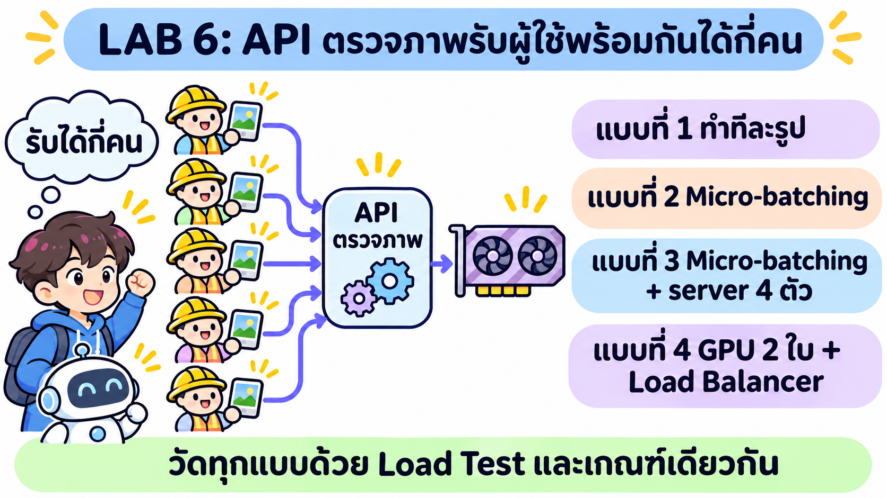
ขอบเขตของ LAB 6 เทียบกับ LAB 4, LAB 5 และ LAB 7
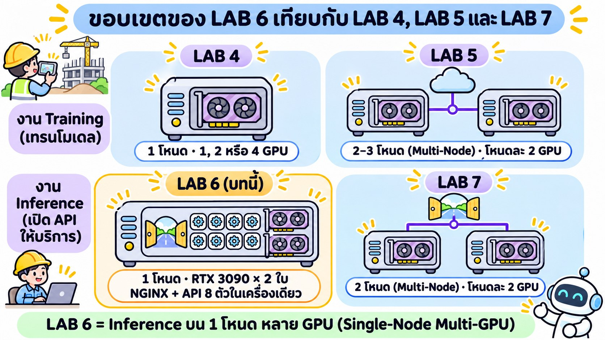
ขอบเขตของ LAB 6: งาน Inference บน 1 โหนด หลาย GPU (ไม่ใช่ Multi-Node)ตารางหลัก · ขอบเขตของบท
| LAB | งานหลัก | จำนวนโหนด (เครื่อง) | GPU ในแต่ละโหนด | สิ่งที่ทดลอง |
|---|---|---|---|---|
| LAB 4 | Training (เทรน LLM) | 1 โหนด (Single-Node) | 1, 2 หรือ 4 ใบ | Data Parallelism และ Model Parallelism ในเครื่องเดียว |
| LAB 5 | Training (เทรน LLM) | 2–3 โหนด (Multi-Node) | โหนดละ 2 ใบ | คลัสเตอร์เทรนข้ามอินเทอร์เน็ต เพิ่มเครื่องแล้วเร็วขึ้นไหม |
| LAB 6 (บทนี้) | Inference / API Serving | 1 โหนด (Single-Node) | RTX 3090 × 2 ใบ | Micro-batching · multi-process · NGINX Load Balancer |
| LAB 7 | Inference / LLM Serving | 2 โหนด (Multi-Node) | โหนดละ 2 ใบ (รวม 4) | ขยาย NGINX แจกงานข้าม 2 โหนดผ่านอินเทอร์เน็ต |
4 การทดลองใน LAB 6: ทั้งหมดรันอยู่ใน 1 โหนด (เครื่องเช่า 1 เครื่อง)
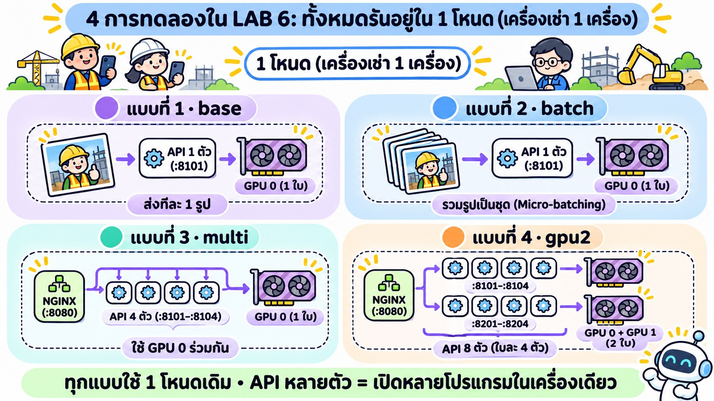
base) เปิดโปรแกรม API เพียง 1 ตัว (:8101) บน GPU 0 ตรวจทีละ 1 รูป (Baseline)batch) ยังเปิดโปรแกรม API 1 ตัว บน GPU 0 แต่เปิด Micro-batching รวมหลายรูปเข้าโมเดลครั้งเดียวmulti) เปิดโปรแกรม API พร้อมกัน 4 ตัว (:8101–:8104) ใช้ GPU 0 ใบเดียวกัน ให้ NGINX แจกงานเพื่อกระจายงาน CPU ไป 4 coregpu2) เปิดใช้ GPU ใบที่ 2 ในโหนดเดิม เพิ่ม API อีก 4 ตัวบน GPU 1 (:8201–:8204) รวมเป็น 8 โปรแกรม ให้ NGINX แจกงานข้าม 2 GPU4 แบบที่วัดใน LAB 6: ทุกแบบใช้ 1 โหนดเดียว ต่างกันที่ GPU และจำนวนโปรแกรม APIตารางหลัก · 4 แบบที่วัด
| แบบ | จำนวนโหนด | GPU ที่ใช้ (ในโหนดเดียว) | โปรแกรม API ที่เปิด (process) | วิธีเรียกโมเดล |
|---|---|---|---|---|
1 (base) | 1 โหนด | 1 ใบ (GPU 0) | 1 ตัว (:8101) | ตรวจทีละ 1 รูป (Baseline) |
2 (batch) | 1 โหนด | 1 ใบ (GPU 0) | 1 ตัว (:8101) | Micro-batching (รวมสูงสุด 32 รูป · รอไม่เกิน 5 ms) |
3 (multi) | 1 โหนด | 1 ใบ (GPU 0) | 4 ตัว (:8101–:8104) ใช้ GPU 0 ร่วมกัน | Micro-batching · NGINX แจกงานให้ 4 โปรแกรม |
4 (gpu2) | 1 โหนด | 2 ใบ (GPU 0 + GPU 1) | 8 ตัว (GPU 0 4 ตัว + GPU 1 4 ตัว) | Micro-batching · NGINX แจกงานข้าม 2 GPU ในโหนดเดียว |
vapp-lab6-nginx เครื่องเดิม (server 1 ตัว = โปรแกรม FastAPI 1 ตัว ไม่ใช่คนละโหนด) · เกณฑ์ผ่านคือ p95 ไม่เกิน 500 ms และ error ต่ำกว่า 1%ระบบของ LAB 6: ทุกส่วนอยู่ใน 1 โหนดเดียว (RTX 3090 จำนวน 2 ใบ สำหรับ Inference)
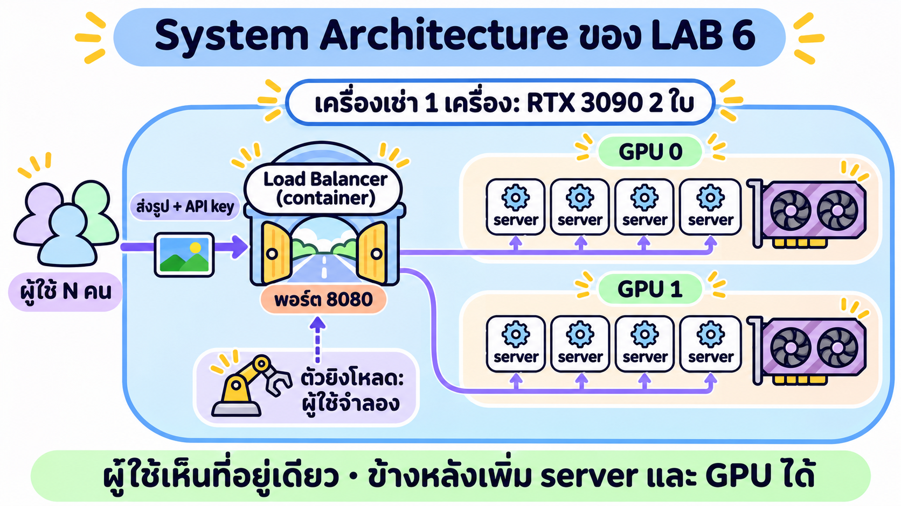
127.0.0.1 ใบละ 4 ตัว) ไม่ใช่คอมพิวเตอร์ 8 เครื่องloadgen.py) อยู่ในโหนดเดียวกัน ยิงเข้า 127.0.0.1:8080 เพื่อไม่ให้ความช้าของอินเทอร์เน็ตปน12 ขั้นของ LAB 6 แบ่งเป็น 5 ส่วน
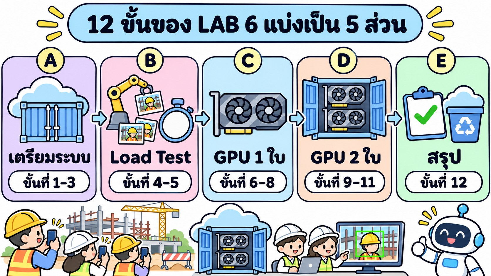
ทั้ง LAB ในภาพเดียว: โหนดเดิม 1 GPU รับได้ 29 → 90 คน และเปิดใช้ 2 GPU รับได้ 180 คนNGINX · 1 โหนด × 2 GPU
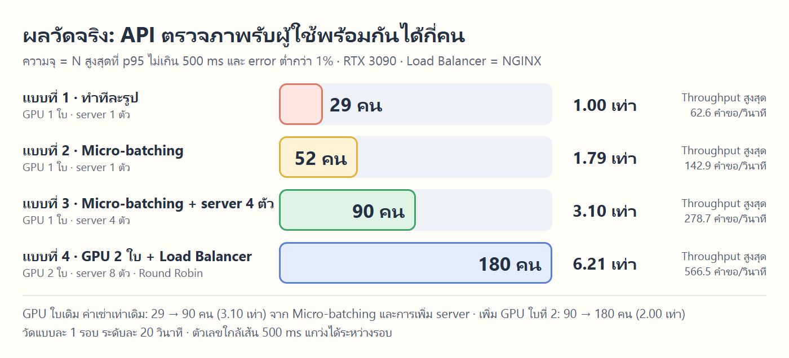
ผลวัดจริงของงาน Inference บน 1 โหนด (RTX 3090 จำนวน 2 ใบ) ทุกแบบใช้เกณฑ์เดียวกัน คือ p95 ไม่เกิน 500 ms และ error ต่ำกว่า 1%
ตัวเลข 3 ตัว ความจุ และ Load Test
ก่อนลงมือ ต้องตกลงกันก่อนว่าคำว่า "รับได้" วัดด้วยอะไร และรู้ได้อย่างไรว่าวัดถูก
เนื้อหาเต็มอยู่ใน README.md (ภาคทฤษฎี)
เมื่อระบบเต็ม เพิ่ม N แล้ว Throughput ไม่เพิ่ม แต่ Latency เพิ่มแทน
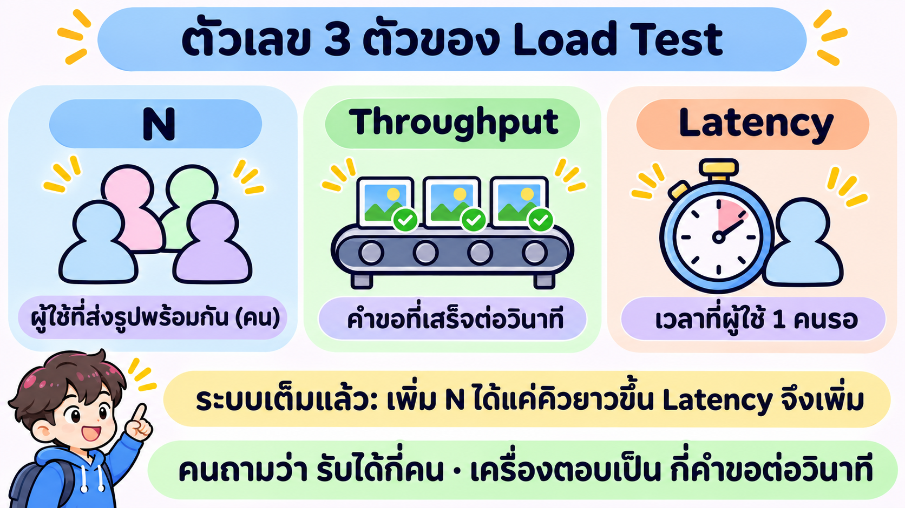
Latency เฉลี่ย (วินาที) ≈ N ÷ Throughputp95 ของ 1 ระดับ N คือ 1 จุดบนกราฟความจุ
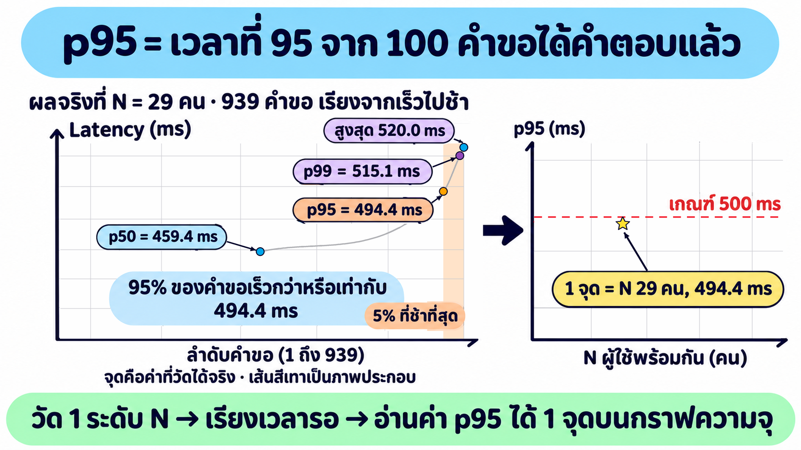
ผลจริงของแบบที่ 1 ที่ N = 29: 939 คำขอ คำขอลำดับที่ 892 ใช้ 494.4 ms จึงได้ p95 = 494.4 ms · ค่านี้คือจุด (29, 494.4 ms) บนกราฟความจุ
ความจุคือ N สูงสุดที่ p95 ไม่เกิน 500 ms และ error ต่ำกว่า 1%
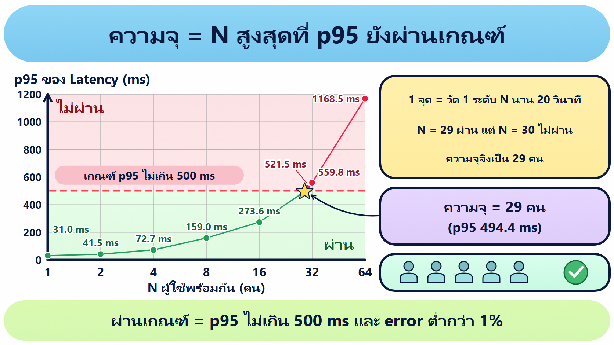
ผู้ใช้จำลองส่งรูป รอคำตอบ แล้วส่งรูปถัดไปทันที จำนวนคนในระบบจึงเท่ากับ N พอดี
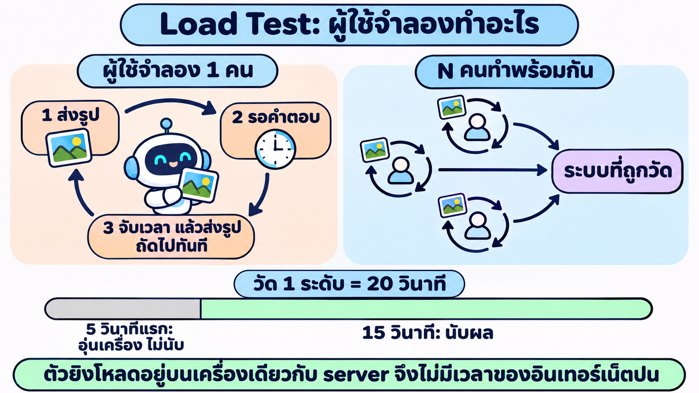
หาความจุด้วย 3 จังหวะ: หาช่วง ประมาณ แล้วปรับ
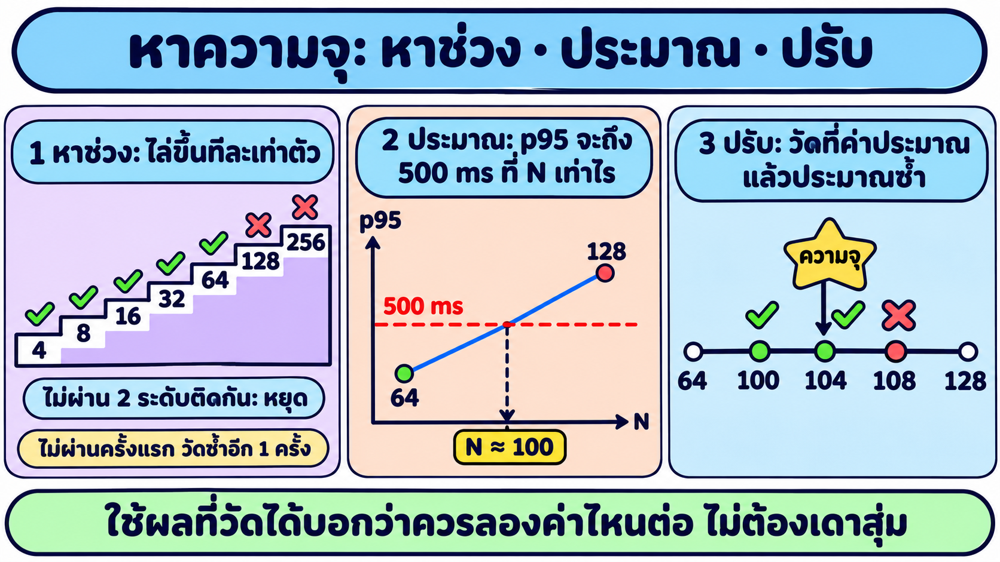
ตัวยิงโหลดเป็นโค้ดที่ AI เขียน จึงต้องพิสูจน์กับ server จำลองที่รู้คำตอบล่วงหน้า
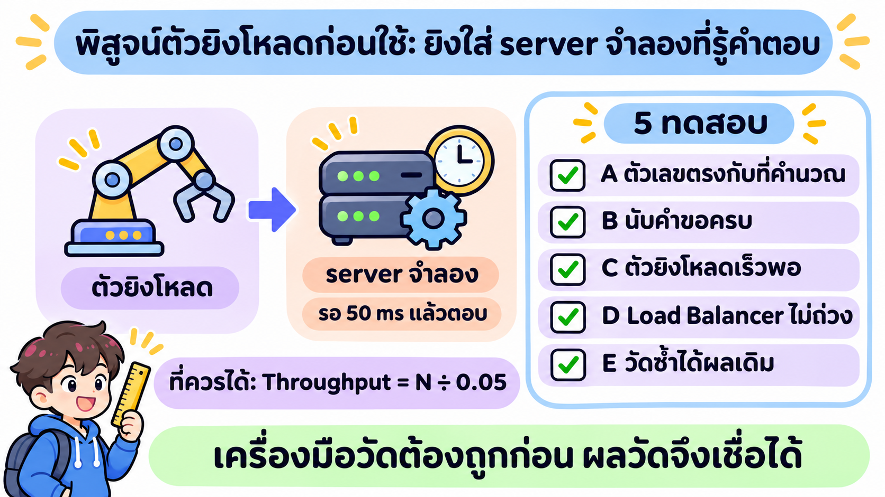
ถ้าตัวยิงโหลดวัดผิด ตัวเลขทุกตัวของ LAB ก็ผิด เครื่องมือวัดต้องถูกก่อน ผลวัดจึงเชื่อได้
ส่วนที่เต็มก่อนคือตัวถ่วง ถ้าตัวถ่วงไม่ใช่ GPU การเช่า GPU เพิ่มก็ไม่ช่วย
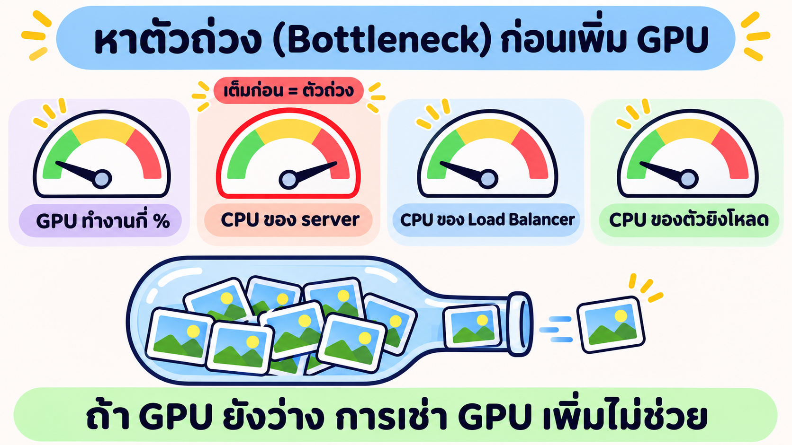
ทุกระดับ N ตัวยิงโหลดบันทึก 4 ค่า คู่กับ Latency คือ GPU ทำงานกี่ %, CPU ของ server, CPU ของ Load Balancer และ CPU ของตัวยิงโหลด
Load Balancer ด้วย NGINX บน 1 โหนด
12 ขั้น ทุกขั้นคือ 1 พรอมต์ โค้ดทุกไฟล์ AI เขียนให้จากพรอมต์ โดยเริ่มจากโฟลเดอร์ว่าง
ทุกขั้นเรียงเหมือนกัน: แนวคิดที่ใช้ → ภาพของขั้น → พรอมต์ → ผลจริง
ก่อนเริ่ม: ทำ LAB 0 ให้เสร็จ และเปิด Claude Code ที่โฟลเดอร์ของบท
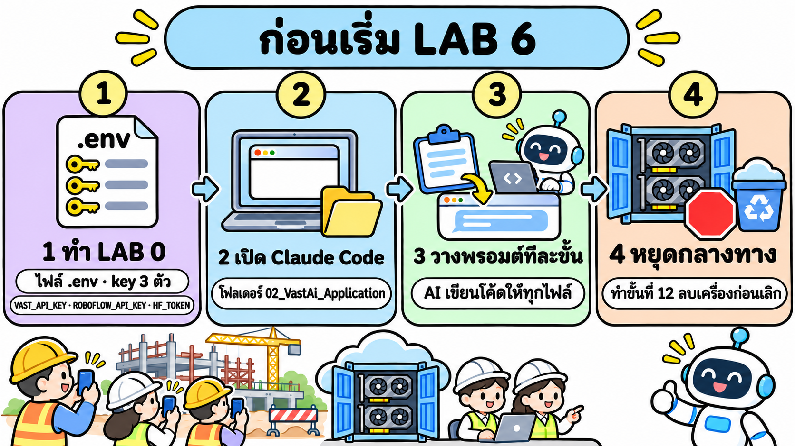
02_VastAi_Applicationlab6_microbatch_lb/code/ขั้นที่ 1: เช่าเพียง 1 โหนด ที่มี RTX 3090 จำนวน 2 ใบในเครื่องเดียว แล้วตรวจ GPU กับ CPU
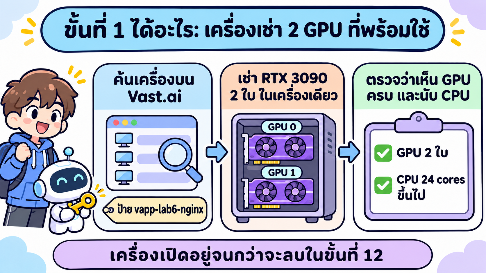
vapp-lab6-nginx ไม่ใช่คลัสเตอร์หลายโหนดGPU 0, GPU 1) และนับ CPU ที่ใช้ได้จริงพรอมต์ · ขั้นที่ 1 · เช่าเครื่อง 2 GPUCopy & Paste
02_VastAi_Applicationพรอมต์ทั้งหมด 20 บรรทัด[ที่ทำงาน]
container `multi-account` · โฟลเดอร์ /workspace/vastapp_lab · สกิล vastai
กุญแจ SSH: /workspace/vastai_lab/Devtool_SSH/devtoolSSH
เก็บโค้ดและผลที่: lab6_microbatch_lb ของโฟลเดอร์ที่เปิด Claude Code อยู่ (ไม่ใช่ใน container)
[งาน]
เช่าเครื่อง GPU 2 ใบ ไว้ทดลองว่า API ตรวจภาพรับผู้ใช้พร้อมกันได้กี่คน
[เครื่องที่ต้องการ]
GPU: RTX 3090 2 ใบในเครื่องเดียว · ราคาไม่เกิน $0.60 ต่อชั่วโมง · ป้าย vapp-lab6-nginx
เงื่อนไข: verified · reliability 0.95 ขึ้นไป · CPU ที่ได้ใช้จริง 24 cores ขึ้นไป · ไม่อยู่ในจีน
ระบบ: PyTorch 2.8 ที่มี CUDA 12.8 · disk 40 GB · เปิดพอร์ต 8080 ให้เรียก API จากนอกเครื่อง
[ขั้นตอน]
1. เช่าเครื่องที่ถูกที่สุดตามเงื่อนไข ถ้าเกิน 10 นาทียังไม่พร้อม ให้ลบแล้วเช่าเครื่องอื่น
2. เข้าไปตรวจว่าเห็น GPU ครบ 2 ใบ และนับ CPU ที่ใช้ได้จริง
[รายงาน]
สรุปเป็นตาราง: GPU · ราคาต่อชั่วโมง · ที่ตั้ง · CPU ที่ใช้ได้จริง · เวลาที่รอจนเครื่องพร้อม
ห้ามแสดงค่า key · บอกว่าเครื่องยังเปิดอยู่ผลขั้นที่ 1: โหนดเดียว (1 เครื่อง × RTX 3090 จำนวน 2 ใบ) พร้อมใช้งานแล้วresults/machine_verify.txt
GPU 0 และ GPU 1)pytorch/pytorch:2.8.0-cuda12.8-cudnn9-runtime · Disk 40 GB · เปิดพอร์ต 8080GPU 0 และ GPU 1)server.py และเปิดทดสอบ Inference บน GPU 0 ของโหนดนี้cluster.shโมเดลหลัง API คือ YOLO11s ขนาดเล็ก งานส่วนใหญ่ของ 1 คำขอจึงอยู่ที่ CPU

ขั้นที่ 2: AI เขียน server.py ที่มี 2 โหมดในตัว แล้วเปิด 1 ตัวบน GPU ใบแรก
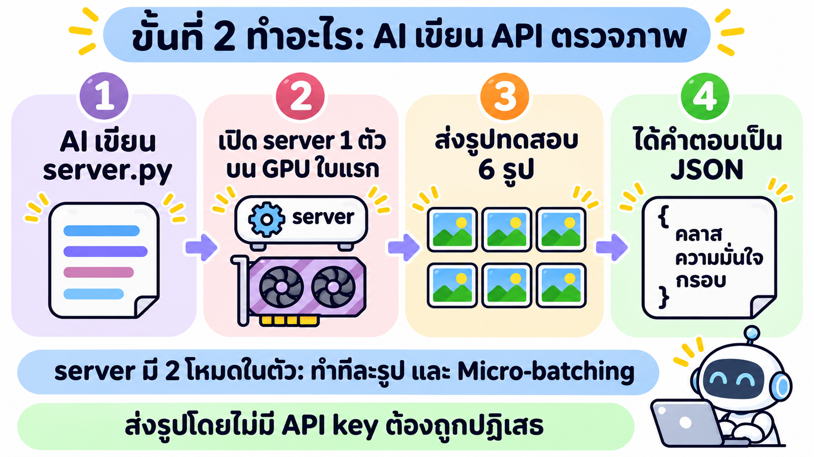
code/server.py เขียนด้วย FastAPI รับรูป 1 รูปที่ POST /v1/detect แล้วตอบเป็น JSONพรอมต์ · ขั้นที่ 2 · เขียน API ตรวจภาพCopy & Paste
02_VastAi_Applicationส่วนที่ 1/2 · บรรทัด 1–19 จาก 28[ที่ทำงาน]
container `multi-account` · โฟลเดอร์ /workspace/vastapp_lab · สกิล vastai
เครื่อง: ป้าย vapp-lab6-nginx · กุญแจ SSH: /workspace/vastai_lab/Devtool_SSH/devtoolSSH
เก็บโค้ดและผลที่: lab6_microbatch_lb ของโฟลเดอร์ที่เปิด Claude Code อยู่ (ไม่ใช่ใน container)
[งาน]
เขียน API ตรวจภาพ แล้วเปิดบน GPU ใบแรกของเครื่องที่เช่า
[ขั้นตอน]
1. เขียน code/server.py ด้วย FastAPI: รับรูป 1 รูป แล้วตอบเป็น JSON ว่าเจอวัตถุอะไรบ้าง (ชื่อคลาส · ความมั่นใจ · กรอบ)
2. server 1 ตัวเรียกโมเดลได้ทีละครั้ง รูปที่มาระหว่างนั้นเข้าคิวรอ และมีตัวหยิบงานตัวเดียวที่ทำงานบน thread เดียวตลอด ตั้งค่าได้ 2 โหมด
- ทีละรูป: หยิบจากคิวครั้งละ 1 รูป
- Micro-batching: หยิบทุกรูปที่รออยู่ในคิว (ไม่เกิน 32 รูป) เข้าโมเดลพร้อมกันในครั้งเดียว ถ้ายังไม่ครบ 32 รูป รอรูปเพิ่มได้ไม่เกิน 5 ms
3. ในคำตอบให้บอกด้วย: server ตัวไหนตอบ · รูปนี้เข้าโมเดลพร้อมกันกี่รูป · เวลารอคิว และเวลาที่โมเดลใช้ (ms)
4. ตอนเปิด server ให้ลองเรียกโมเดลล่วงหน้าทุกขนาด ตั้งแต่ 1 รูปถึงจำนวนสูงสุดของโหมดนั้น แล้วจึงตอบว่าพร้อม
5. นำโค้ด โมเดล และรูปทดสอบขึ้นเครื่อง ติดตั้งสิ่งที่ต้องใช้ แล้วเปิด server 1 ตัวบน GPU ใบแรก โหมดทีละรูป
6. ทดสอบบนเครื่อง: ส่งรูปทั้ง 6 รูปพร้อม API key · ส่งแบบไม่มี key ต้องถูกปฏิเสธ
7. ทำภาพตาราง 6 รูป วาดกรอบและชื่อคลาสที่โมเดลตรวจได้ กำกับขนาดไฟล์ใต้รูป เก็บที่ results/dataset_samples.jpgพรอมต์ · ขั้นที่ 2 · เขียน API ตรวจภาพCopy & Paste
02_VastAi_Applicationส่วนที่ 2/2 · บรรทัด 20–28 จาก 28[ค่าที่ตรึง]
โมเดล: lab6_microbatch_lb/best.pt (YOLO11s ที่เทรนใน LAB 1) · ขนาดภาพ 640 · ความมั่นใจขั้นต่ำ 0.35
รูปทดสอบ: lab6_microbatch_lb/samples (6 รูป)
ทางเข้า: POST /v1/detect (ช่องชื่อ file) · API key แบบ Bearer ไม่มีหรือผิดตอบ 401 · GET /health
[รายงาน]
อธิบายโค้ด 3–5 บรรทัด · ยก JSON จริง 1 ตัวอย่างแล้วอธิบายแต่ละช่อง
สรุปเป็นตาราง: รูป · ขนาดไฟล์ · จำนวนวัตถุของแต่ละคลาส · เวลาที่โมเดลใช้
ห้ามแสดงค่า key · บอกว่าเครื่องยังเปิดอยู่ผลขั้นที่ 2: โมเดลตรวจรูปทดสอบได้ครบ 6 รูป และใช้ 15.9–19.0 ms ต่อรูป
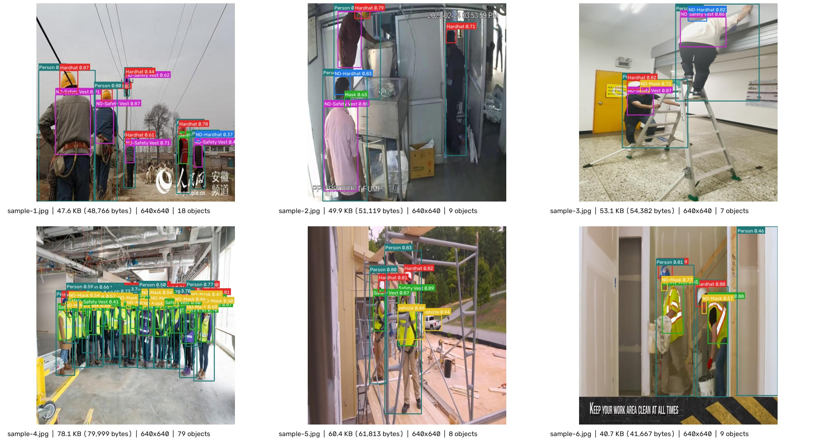
ขั้นที่ 3: ใน 1 โหนด NGINX พอร์ต 8080 แจกงานให้โปรแกรม API 8 ตัวบน 127.0.0.1
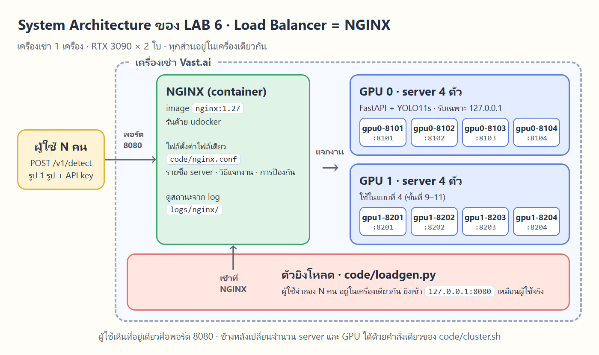
8101–8104), API ของ GPU 1 (8201–8204) และ loadgen.py127.0.0.1 ภายในเครื่องcluster.sh แต่เป็นการจัดการ หลายโปรแกรม (process) ในโหนดเดียว (ไม่ใช่คลัสเตอร์หลายโหนดแบบ LAB 5)ขั้นที่ 3: NGINX เป็นประตูเดียวที่พอร์ต 8080 และ server รับเฉพาะคำขอจากในเครื่อง
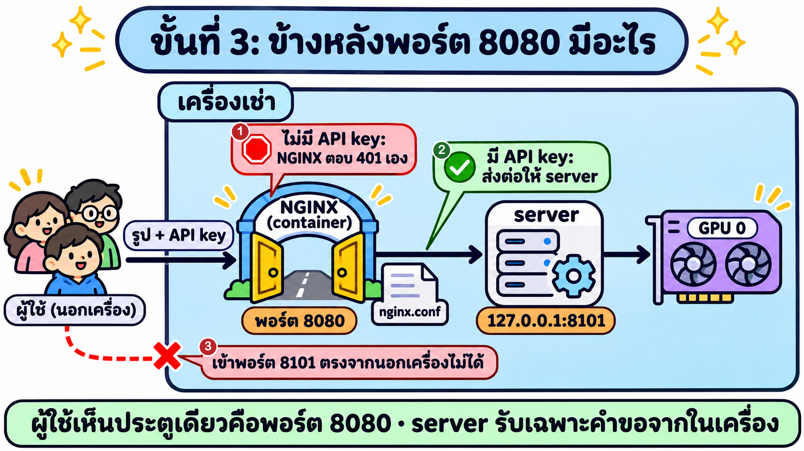
nginx:1.27 ด้วย udocker และการตั้งค่าอยู่ใน code/nginx.conf127.0.0.1 จึงเข้าพอร์ต 8101 ตรงจากนอกเครื่องไม่ได้ขั้นที่ 3: cluster.sh เปิดระบบทั้ง 4 แบบภายในโหนดเดียวจากค่า 3 ค่า
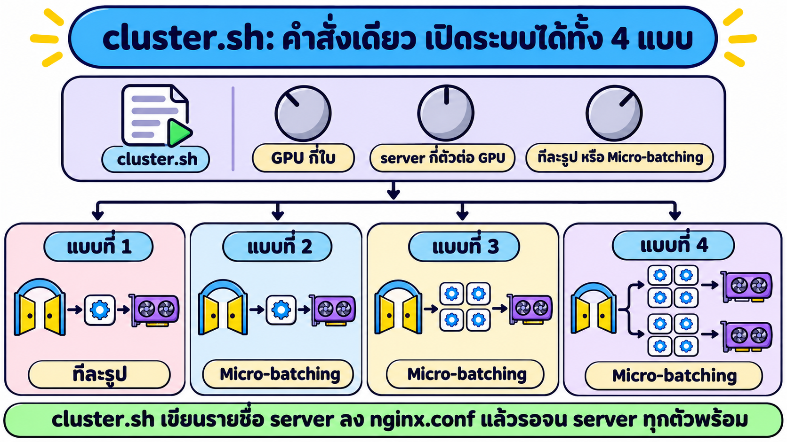
cluster.sh เขียนรายชื่อ server ลง nginx.conf ตามจำนวนที่สั่งพรอมต์ · ขั้นที่ 3 · ตั้ง NGINX เป็น Load Balancer แบบ containerCopy & Paste
02_VastAi_Applicationพรอมต์ทั้งหมด 20 บรรทัด[ที่ทำงาน]
container `multi-account` · โฟลเดอร์ /workspace/vastapp_lab · สกิล vastai
เครื่อง: ป้าย vapp-lab6-nginx · กุญแจ SSH: /workspace/vastai_lab/Devtool_SSH/devtoolSSH
เก็บโค้ดและผลที่: lab6_microbatch_lb ของโฟลเดอร์ที่เปิด Claude Code อยู่ (ไม่ใช่ใน container)
[งาน]
ตั้ง NGINX เป็นประตูเดียวของระบบ (Load Balancer) โดยรันเป็น container ไม่ติดตั้งลงเครื่อง
[ขั้นตอน]
1. รัน NGINX จาก image ทางการ nginx:1.27 เป็น container ด้วย udocker (เครื่องเช่าเป็น container อยู่แล้ว จึงใช้ Docker ซ้อนไม่ได้)
2. การตั้งค่าทั้งหมดอยู่ในไฟล์ code/nginx.conf แล้วเชื่อมไฟล์เข้า container
3. ผู้ใช้เข้าที่พอร์ต 8080 แล้ว NGINX ส่งต่อให้ server · วิธีแจกงานเริ่มต้นคือ Round Robin (แจกวนทีละตัว) · server รับเฉพาะคำขอจากภายในเครื่อง
4. เขียน code/cluster.sh ไว้เปิดระบบใหม่ในคำสั่งเดียว เลือกได้ 3 อย่าง: ใช้ GPU กี่ใบ (1 หรือ 2) · server กี่ตัวต่อ GPU · โหมดทีละรูปหรือ Micro-batching
มีคำสั่งดูสถานะและปิดทั้งระบบ · คำสั่งเปิดต้องรอจน server ทุกตัวพร้อมก่อนจึงบอกว่าเสร็จ
5. API key สุ่มครั้งแรก แล้วใช้ค่าเดิมทุกครั้งที่เปิดใหม่
6. เปิดระบบแบบที่ 1 (GPU 1 ใบ · server 1 ตัว · โหมดทีละรูป) แล้วทดสอบจากนอกเครื่องผ่านพอร์ต 8080: ส่งรูป 1 รูปพร้อม key · ส่งแบบไม่มี key ต้องถูกปฏิเสธ
[รายงาน]
อธิบายไฟล์ตั้งค่าของ NGINX ทีละส่วน · วาดแผนภาพข้อความว่าคำขอ 1 รายการเดินทางผ่านอะไรบ้าง
สรุปผลทดสอบเป็นตาราง · ห้ามแสดงค่า key · บอกว่าเครื่องยังเปิดอยู่ผลขั้นที่ 3: ใน nginx.conf ไม่ใส่คำสั่งเลือกวิธีแจกงาน NGINX จึงใช้ Round Robin
worker_processes 4; # ไม่ใช้ auto เพราะเครื่องแสดง 64 threads แต่โควตามีราว 25 cores
upstream detect_servers {
zone detect_servers 64k; # worker ทั้ง 4 ใช้ลำดับวนชุดเดียวกัน
# BEGIN LB (written by cluster.sh)
# (no directive) # ไม่ใส่คำสั่ง = Round Robin
# END LB
# BEGIN SERVERS (written by cluster.sh)
server 127.0.0.1:8101; # gpu0 server 1
server 127.0.0.1:8201; # gpu1 server 1
# ... ถึง 8104 และ 8204
# END SERVERS
keepalive 64; # เก็บ connection ไปยัง server ไว้ใช้ซ้ำ
}
server {
listen 8080 backlog=4096;
location /v1/ {
if ($http_authorization = "") { return 401 '{"detail":"missing API key"}\n'; }
proxy_pass http://detect_servers;
proxy_http_version 1.1;
proxy_set_header Connection "";
proxy_next_upstream error timeout; # ต่อ server ไม่ติด ให้ลองตัวถัดไป
add_header X-Upstream $upstream_addr always;
}
}ขั้นที่ 4: ตัวยิงโหลดเก็บตัวเลขจาก 3 แหล่งในทุกระดับ N
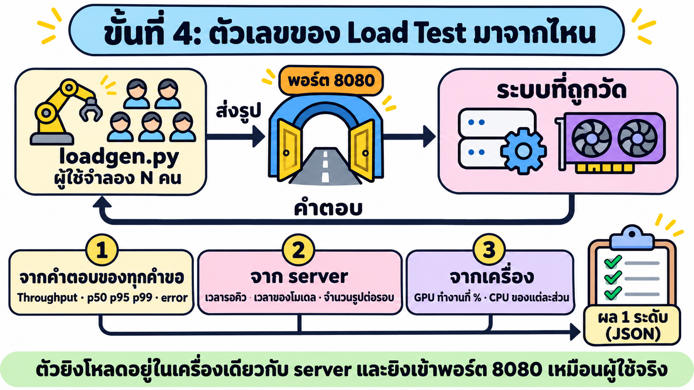
code/loadgen.py จำลองผู้ใช้ N คน ยิงเข้า พอร์ต 8080 จากในเครื่องเดียวกับ serverขั้นที่ 4: ตัวยิงโหลดมี 2 โหมด คือหาความจุ และระดับเดียว
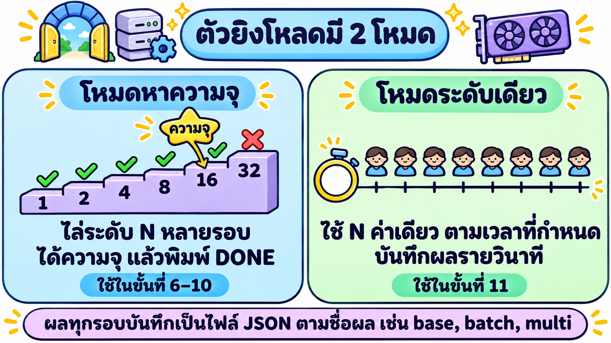
พรอมต์ · ขั้นที่ 4 · เขียนตัวยิงโหลดCopy & Paste
02_VastAi_Applicationส่วนที่ 1/2 · บรรทัด 1–15 จาก 30[ที่ทำงาน]
container `multi-account` · โฟลเดอร์ /workspace/vastapp_lab · สกิล vastai
เครื่อง: ป้าย vapp-lab6-nginx · กุญแจ SSH: /workspace/vastai_lab/Devtool_SSH/devtoolSSH
เก็บโค้ดและผลที่: lab6_microbatch_lb ของโฟลเดอร์ที่เปิด Claude Code อยู่ (ไม่ใช่ใน container)
[งาน]
เขียนตัวยิงโหลด (Load Test) ไว้วัดว่าระบบรับผู้ใช้พร้อมกันได้กี่คน
[ขั้นตอน]
1. เขียน code/loadgen.py รันบนเครื่องเดียวกับ server ยิงเข้าที่พอร์ต 8080
2. จำลองผู้ใช้ N คน: แต่ละคนส่งรูป รอคำตอบ แล้วส่งรูปถัดไปทันที วนรูปทดสอบ 6 รูป · รอเกิน 10 วินาทีนับเป็น error
3. วัด 1 ระดับ = ยิง 20 วินาที โดย 5 วินาทีแรกเป็นช่วงอุ่นเครื่อง ไม่นับ
4. ต่อ 1 ระดับให้บันทึก: Throughput (คำขอที่สำเร็จต่อวินาที) · เวลารอ p50 p95 p99 · error · GPU ทำงานกี่ % ของแต่ละใบ · CPU ที่ server, NGINX และตัวยิงโหลดใช้
คำขอที่ server แต่ละตัวตอบ · เวลารอคิวและเวลาของโมเดล · จำนวนรูปเฉลี่ยที่เข้าโมเดลพร้อมกัน
5. โหมดหาความจุ ทำ 3 จังหวะพรอมต์ · ขั้นที่ 4 · เขียนตัวยิงโหลดCopy & Paste
02_VastAi_Applicationส่วนที่ 2/2 · บรรทัด 16–30 จาก 30 - หาช่วง: ไล่ N = 1, 2, 4, 8, 16, 32, 64, 128, 256, 512 จนไม่ผ่าน 2 ระดับติดกัน (ระดับที่ไม่ผ่านให้วัดซ้ำอีก 1 ครั้งก่อนตัดสิน)
- ประมาณ: ใช้ p95 ของระดับสุดท้ายที่ผ่านกับระดับแรกที่ไม่ผ่าน ลากเส้นตรงหาว่า p95 จะถึง 500 ms ที่ N เท่าไร แล้ววัดที่ N นั้น
- ปรับ: ประมาณซ้ำจากจุดที่วัดเพิ่ม จนระดับที่ผ่านกับระดับที่ไม่ผ่านห่างกันไม่เกิน 2 คน (N เกิน 100 ใช้ 4 คน)
และพิมพ์ค่าประมาณอีกแบบไว้เทียบ: N ≈ Throughput สูงสุด × 0.5 วินาที
6. โหมดระดับเดียว: ยิงด้วย N ค่าเดียวตามเวลาที่กำหนด และบันทึกผลรายวินาที
7. ตั้งชื่อผลได้ บันทึกเป็น JSON ชื่อละไฟล์ (รวมค่าที่ประมาณไว้ทุกรอบ) พิมพ์ผลทีละระดับ จบแล้วพิมพ์ความจุกับคำว่า DONE
8. ลองยิงระบบแบบที่ 1 ด้วย N = 4 สั้น ๆ ให้เห็นว่าใช้งานได้
[เกณฑ์]
ผ่าน = p95 ไม่เกิน 500 ms และ error ต่ำกว่า 1%
ความจุ = จำนวนผู้ใช้พร้อมกัน (N) สูงสุดที่ผ่าน
[รายงาน]
อธิบายโค้ด 3–5 บรรทัด · วาดแผนภาพข้อความของผู้ใช้จำลอง 1 คน · ผลของการลองยิง N = 4
บอกว่าเครื่องยังเปิดอยู่ขั้นที่ 5: ยิงตัวยิงโหลดใส่ server จำลองที่รู้คำตอบล่วงหน้า 5 ทดสอบ
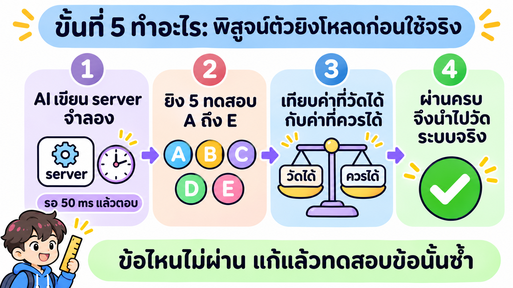
code/fake_server.py ซึ่งไม่ใช้โมเดล รอตามเวลาที่ตั้งไว้แล้วตอบ และนับคำขอที่ได้รับพรอมต์ · ขั้นที่ 5 · พิสูจน์ว่าตัวยิงโหลดวัดถูกCopy & Paste
02_VastAi_Applicationพรอมต์ทั้งหมด 25 บรรทัด[ที่ทำงาน]
container `multi-account` · โฟลเดอร์ /workspace/vastapp_lab · สกิล vastai
เครื่อง: ป้าย vapp-lab6-nginx · กุญแจ SSH: /workspace/vastai_lab/Devtool_SSH/devtoolSSH
เก็บโค้ดและผลที่: lab6_microbatch_lb ของโฟลเดอร์ที่เปิด Claude Code อยู่ (ไม่ใช่ใน container)
[งาน]
พิสูจน์ว่าตัวยิงโหลดวัดถูก ก่อนนำไปวัดระบบจริง โดยยิงใส่ server จำลองที่รู้คำตอบล่วงหน้า
[ขั้นตอน]
1. เขียน code/fake_server.py: server จำลองที่ไม่ใช้โมเดล รับรูปแบบเดียวกับ API จริง รอตามเวลาที่ตั้งไว้แล้วตอบ รับได้พร้อมกันไม่จำกัด และนับจำนวนคำขอที่ได้รับ
2. ทดสอบ A ตัวเลขตรงกับที่คำนวณไหม: ตั้งให้รอ 50 ms แล้วยิงตรงที่ server จำลองด้วย N = 1, 10, 50, 100 · ที่ควรได้คือ p50 ราว 50 ms และ Throughput ราว N ÷ 0.05
3. ทดสอบ B นับครบไหม: เทียบจำนวนคำขอที่ตัวยิงโหลดส่ง (รวมช่วงอุ่นเครื่อง) กับจำนวนที่ server จำลองนับได้ในรอบเดียวกัน
4. ทดสอบ C ตัวยิงโหลดเร็วพอไหม: ตั้งให้ server จำลองตอบทันที แล้วยิงด้วย N = 200 ดูว่าส่งได้สูงสุดกี่คำขอต่อวินาที
5. ทดสอบ D NGINX ถ่วงไหม: ให้ NGINX ส่งต่อไปที่ server จำลอง (รอ 50 ms) แล้วยิงผ่านพอร์ต 8080 ด้วย N = 50 เทียบกับยิงตรง
6. ทดสอบ E วัดซ้ำได้ผลเดิมไหม: เปิดระบบแบบที่ 1 กลับมา แล้วยิง API จริงที่ N = 8 ซ้ำ 3 ครั้ง
7. บันทึกผลที่ results/loadtest_check.json และวาดกราฟ results/loadtest_check.png (ข้อความอังกฤษ): Throughput ที่วัดได้เทียบกับที่คำนวณของทดสอบ A
8. ข้อไหนไม่ผ่าน ให้หาสาเหตุ แก้ แล้วทดสอบข้อนั้นซ้ำ
[เกณฑ์ผ่าน]
A ต่างจากที่คำนวณไม่เกิน 10% · B ต่างกันไม่เกิน 1% · C มากกว่า 2,000 คำขอต่อวินาที
D p50 ช้ากว่ายิงตรงไม่เกิน 10 ms · E ทั้ง 3 ครั้งต่างกันไม่เกิน 10%
[รายงาน]
สรุปเป็นตาราง: ทดสอบ · ค่าที่ควรได้ · ค่าที่วัดได้ · ผ่านหรือไม่
บอกสิ่งที่ต้องแก้ระหว่างทาง (ถ้ามี) และบอกว่าเครื่องยังเปิดอยู่ผลขั้นที่ 5 ทดสอบ A: จุดที่วัดได้ทั้ง 4 จุดอยู่บนเส้นที่คำนวณ ต่างมากสุด 1.4%results/loadtest_check.json
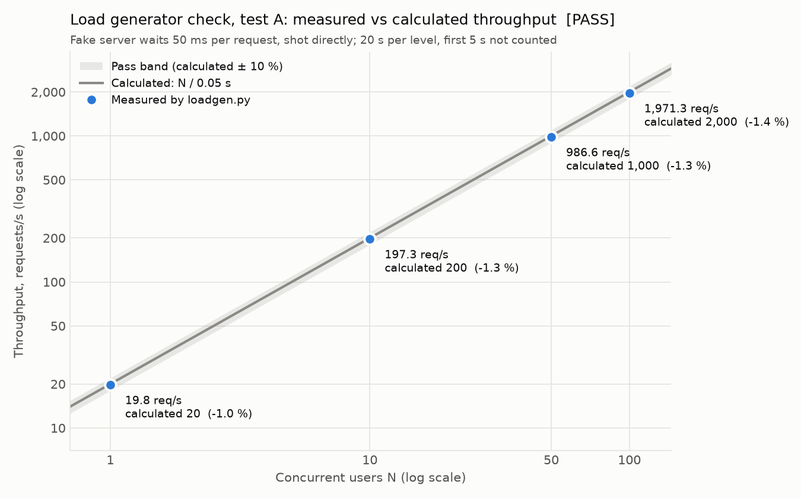
เส้นคือค่าที่คำนวณ N ÷ 0.05 วินาที แถบสีเทาคือช่วงผ่าน ±10% และจุดคือค่าที่ตัวยิงโหลดวัดได้
แบบที่ 1 ทำทีละรูป: ผู้ใช้ต่อคิวกัน ทั้งที่ GPU ยังทำงานไม่ถึงครึ่ง
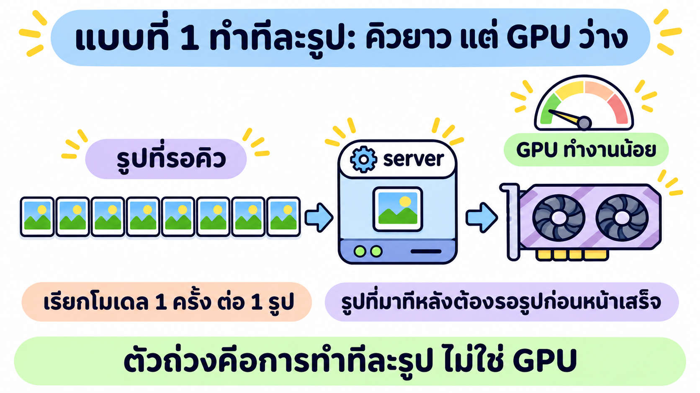
ขั้นที่ 6: วัดความจุของแบบที่ 1 เป็น Baseline ชื่อผล base
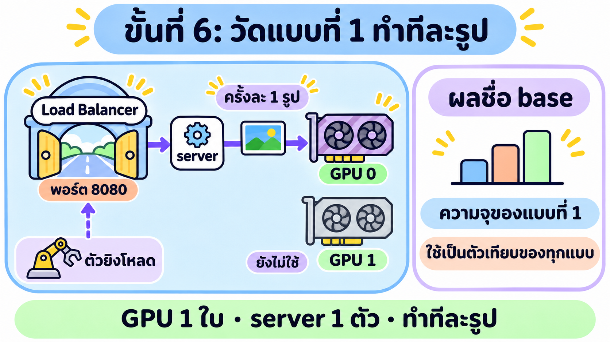
base ใช้เป็นตัวเทียบของทุกแบบพรอมต์ · ขั้นที่ 6 · แบบที่ 1: ทำทีละรูปCopy & Paste
02_VastAi_Applicationพรอมต์ทั้งหมด 21 บรรทัด[ที่ทำงาน]
container `multi-account` · โฟลเดอร์ /workspace/vastapp_lab · สกิล vastai
เครื่อง: ป้าย vapp-lab6-nginx · กุญแจ SSH: /workspace/vastai_lab/Devtool_SSH/devtoolSSH
เก็บโค้ดและผลที่: lab6_microbatch_lb ของโฟลเดอร์ที่เปิด Claude Code อยู่ (ไม่ใช่ใน container)
[งาน]
วัดความจุของแบบที่ 1: GPU 1 ใบ · server 1 ตัว · ทำทีละรูป
[ขั้นตอน]
1. เปิดระบบแบบที่ 1 (GPU 1 ใบ · server 1 ตัว · โหมดทีละรูป)
2. หาความจุด้วยตัวยิงโหลด ตั้งชื่อผลว่า base · รันเป็นงานเบื้องหลัง แล้วเช็กจนเห็น DONE
[เกณฑ์]
ผ่าน = p95 ไม่เกิน 500 ms และ error ต่ำกว่า 1%
ความจุ = จำนวนผู้ใช้พร้อมกัน (N) สูงสุดที่ผ่าน
[รายงาน]
สรุปเป็นตารางทุกระดับ N: Throughput · p50 · p95 · GPU ทำงานกี่ % · CPU ของ server · เวลารอคิว · เวลาของโมเดล · ผ่านหรือไม่
ประโยค "แบบที่ 1 รับผู้ใช้พร้อมกันได้ N คน" · ตอนเต็มความจุ GPU ทำงานกี่ % และส่วนไหนเป็นตัวถ่วง
ตารางการประมาณ: ค่าที่ประมาณไว้แต่ละรอบ เทียบกับผลที่วัดได้ และค่าจากสูตร N ≈ Throughput สูงสุด × 0.5 วินาที ห่างจากความจุจริงเท่าไร
บอกว่าเครื่องยังเปิดอยู่ผลขั้นที่ 6: แบบที่ 1 รับได้ 29 คน ทั้งที่ GPU ทำงานเพียง 22%results/base.json
แบบที่ 2 Micro-batching: server รวมรูปที่รออยู่ แล้วเรียกโมเดลครั้งเดียว

GPU ตรวจหลายรูปพร้อมกันได้ในเวลาใกล้เคียงกับรูปเดียว คำว่า batch คือชุดรูปที่เข้าโมเดลพร้อมกัน 1 รอบ
Micro-batching มีปุ่มปรับ 2 ปุ่ม และผู้ใช้คนเดียวจะช้าลงเล็กน้อย
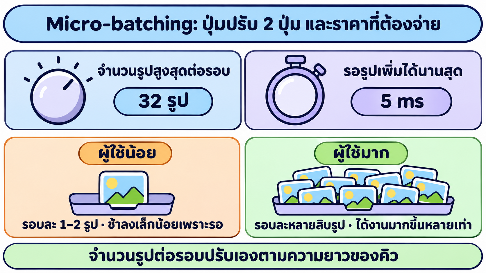
ขั้นที่ 7: เปิด server ตัวเดิมในโหมด Micro-batching แล้ววัดความจุ ชื่อผล batch
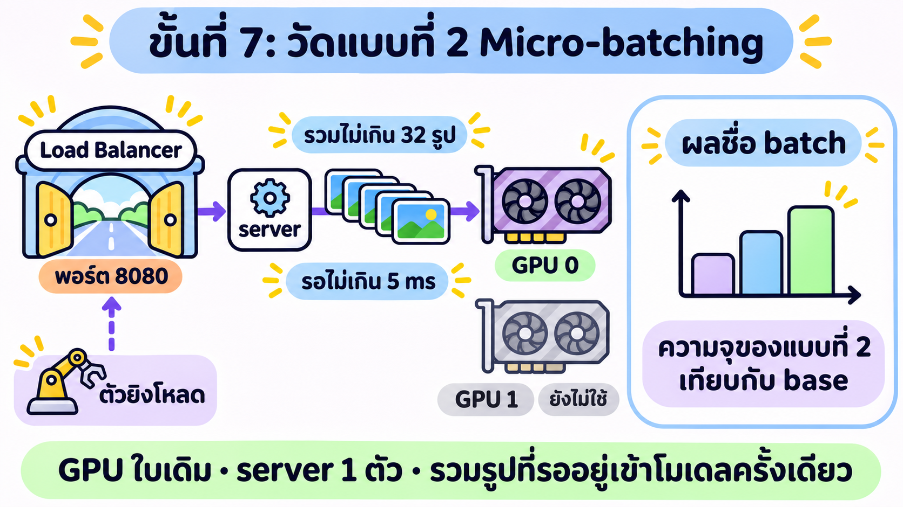
base ซ้ำด้วยโค้ดฉบับแก้พรอมต์ · ขั้นที่ 7 · แบบที่ 2: Micro-batchingCopy & Paste
02_VastAi_Applicationพรอมต์ทั้งหมด 22 บรรทัด[ที่ทำงาน]
container `multi-account` · โฟลเดอร์ /workspace/vastapp_lab · สกิล vastai
เครื่อง: ป้าย vapp-lab6-nginx · กุญแจ SSH: /workspace/vastai_lab/Devtool_SSH/devtoolSSH
เก็บโค้ดและผลที่: lab6_microbatch_lb ของโฟลเดอร์ที่เปิด Claude Code อยู่ (ไม่ใช่ใน container)
[งาน]
วัดความจุของแบบที่ 2: GPU ใบเดิม · server 1 ตัว · Micro-batching (รวมรูปที่รออยู่เข้าโมเดลพร้อมกัน)
[ขั้นตอน]
1. เปิดระบบใหม่: GPU 1 ใบ · server 1 ตัว · โหมด Micro-batching (ไม่เกิน 32 รูป รอไม่เกิน 5 ms)
2. หาความจุด้วยตัวยิงโหลด ตั้งชื่อผลว่า batch · รันเป็นงานเบื้องหลัง แล้วเช็กจนเห็น DONE
3. ถ้าผลแย่กว่าแบบที่ 1 แปลว่าโค้ดมีปัญหา ให้หาสาเหตุและแก้ แล้ววัดแบบที่ 1 (base) ซ้ำด้วยโค้ดฉบับแก้
[เกณฑ์]
ผ่าน = p95 ไม่เกิน 500 ms และ error ต่ำกว่า 1%
ความจุ = จำนวนผู้ใช้พร้อมกัน (N) สูงสุดที่ผ่าน
[รายงาน]
สรุปเป็นตารางเทียบแบบที่ 1 กับแบบที่ 2: ความจุ · Throughput สูงสุด · p95 ที่ความจุ · GPU ทำงานกี่ % · CPU ของ server · เป็นกี่เท่าของแบบที่ 1
ตารางของแบบที่ 2 ทุกระดับ N: จำนวนรูปเฉลี่ยที่เข้าโมเดลพร้อมกัน · เวลาของโมเดลต่อครั้ง · p50 · p95
บอกว่าตอนมีผู้ใช้คนเดียว แบบที่ 2 ช้ากว่าแบบที่ 1 กี่ ms และส่วนไหนเป็นตัวถ่วงของแบบที่ 2
บอกว่าเครื่องยังเปิดอยู่ผลขั้นที่ 7: Micro-batching ทำให้ GPU ใบเดิมรับได้ 52 คน จากเดิม 29 คนresults/batch.json
server ตัวเดียวยังไม่พอ เพราะตัวถ่วงน่าจะย้ายไปอยู่ที่ CPU ของ server ตัวเดียว
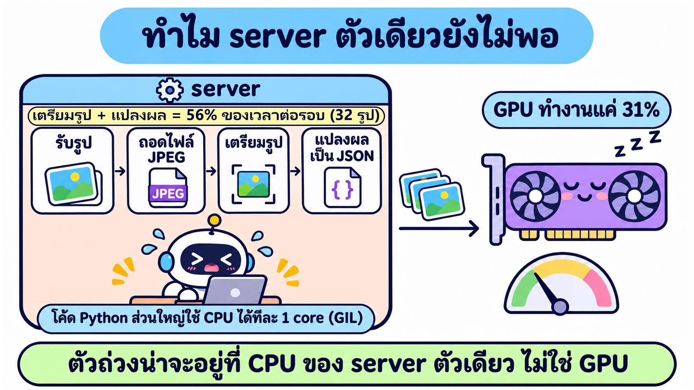
โค้ด Python ส่วนใหญ่ใน process เดียวรันได้ทีละ 1 core (ข้อจำกัดชื่อ GIL) งานรับรูป ถอดไฟล์ JPEG เตรียมรูป และแปลงผลจึงต่อคิวกัน ขณะที่ GPU ยังว่าง · ผลวัด: งานส่วนนี้กิน 56% ของรอบที่ 32 รูป และ GPU ทำงานแค่ 31%
แบบที่ 3 เปิดโปรแกรม API 4 ตัวบน GPU ใบเดิม งาน CPU จึงกระจายไป 4 core
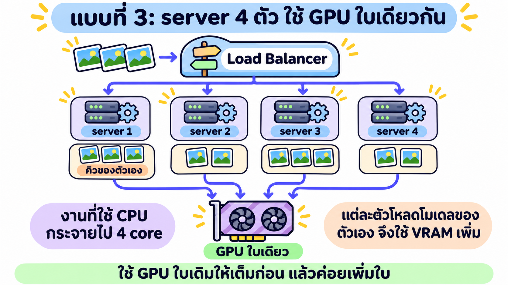
ขั้นที่ 8: เปิดโปรแกรม API 4 ตัว (4 process) บน GPU ใบเดิม แล้ววัดความจุ ชื่อผล multi
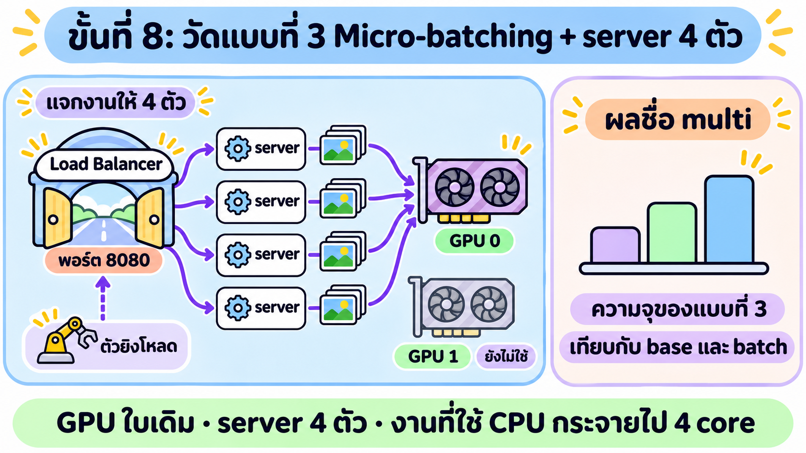
:8101–:8104 บน 127.0.0.1) โหมด Micro-batching ในโหนดเดียวกันพรอมต์ · ขั้นที่ 8 · แบบที่ 3: Micro-batching + server 4 ตัวCopy & Paste
02_VastAi_Applicationพรอมต์ทั้งหมด 21 บรรทัด[ที่ทำงาน]
container `multi-account` · โฟลเดอร์ /workspace/vastapp_lab · สกิล vastai
เครื่อง: ป้าย vapp-lab6-nginx · กุญแจ SSH: /workspace/vastai_lab/Devtool_SSH/devtoolSSH
เก็บโค้ดและผลที่: lab6_microbatch_lb ของโฟลเดอร์ที่เปิด Claude Code อยู่ (ไม่ใช่ใน container)
[งาน]
วัดความจุของแบบที่ 3: GPU ใบเดิม · server 4 ตัวใช้ GPU ใบเดียวกัน · Micro-batching
[ขั้นตอน]
1. เปิดระบบใหม่: GPU 1 ใบ · server 4 ตัว · โหมด Micro-batching (ไม่เกิน 32 รูป รอไม่เกิน 5 ms) · NGINX แจกงานให้ทั้ง 4 ตัวแบบ Round Robin
2. หาความจุด้วยตัวยิงโหลด ตั้งชื่อผลว่า multi · รันเป็นงานเบื้องหลัง แล้วเช็กจนเห็น DONE
[เกณฑ์]
ผ่าน = p95 ไม่เกิน 500 ms และ error ต่ำกว่า 1%
ความจุ = จำนวนผู้ใช้พร้อมกัน (N) สูงสุดที่ผ่าน
[รายงาน]
สรุปเป็นตารางเทียบ 3 แบบ (ทีละรูป · Micro-batching · Micro-batching + server 4 ตัว)
หัวตาราง: ความจุ · Throughput สูงสุด · p95 ที่ความจุ · จำนวนรูปเฉลี่ยที่เข้าโมเดลพร้อมกัน · GPU ทำงานกี่ % · CPU ของ server · VRAM ที่ใช้ · เป็นกี่เท่าของแบบที่ 1
บอกว่าคำขอกระจายไป server 4 ตัวเท่ากันไหม และส่วนไหนเป็นตัวถ่วงของแต่ละแบบ
บอกว่าเครื่องยังเปิดอยู่ผลขั้นที่ 8: server 4 ตัวทำให้ GPU ใบเดิมรับได้ 90 คน และ GPU ทำงานถึง 82%results/multi.json
แบบที่ 4 เปิดใช้ GPU ใบที่ 2 ในโหนดเดียวกัน แล้วให้ Load Balancer แจกงานข้าม 2 ใบ
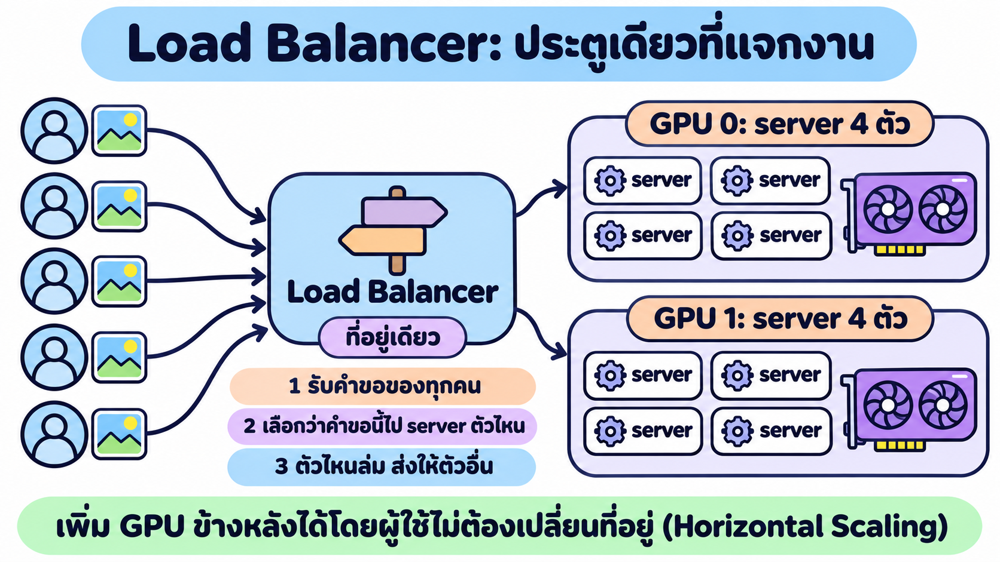
ขั้นที่ 9: เปิดใช้ GPU ทั้ง 2 ใบในโหนดเดียวกัน (ใบละ 4 โปรแกรม) แล้ววัดความจุ ชื่อผล gpu2
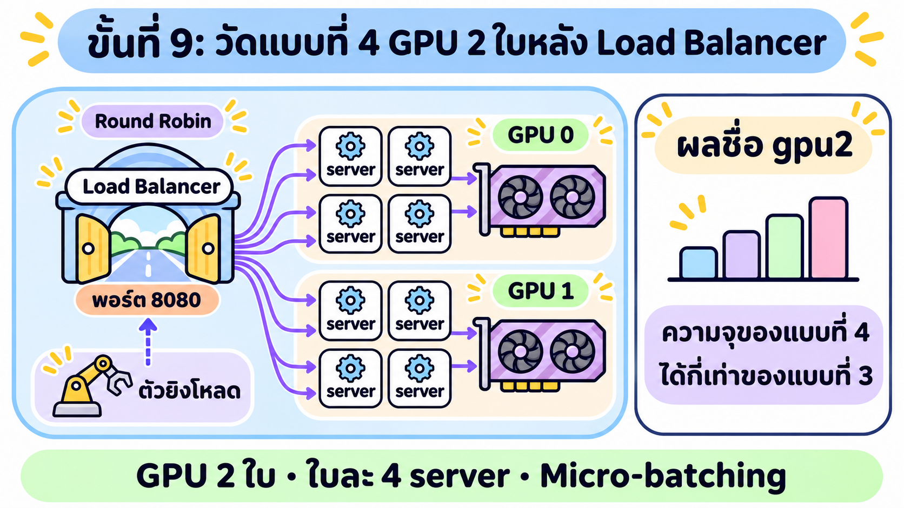
127.0.0.1:8101–8104 และ 8201–8204พรอมต์ · ขั้นที่ 9 · แบบที่ 4: GPU 2 ใบCopy & Paste
02_VastAi_Applicationพรอมต์ทั้งหมด 20 บรรทัด[ที่ทำงาน]
container `multi-account` · โฟลเดอร์ /workspace/vastapp_lab · สกิล vastai
เครื่อง: ป้าย vapp-lab6-nginx · กุญแจ SSH: /workspace/vastai_lab/Devtool_SSH/devtoolSSH
เก็บโค้ดและผลที่: lab6_microbatch_lb ของโฟลเดอร์ที่เปิด Claude Code อยู่ (ไม่ใช่ใน container)
[งาน]
วัดความจุของแบบที่ 4: GPU 2 ใบ · ใบละ 4 server · Micro-batching · NGINX แจกงานแบบ Round Robin
[ขั้นตอน]
1. เปิดระบบใหม่: GPU 2 ใบ · server 4 ตัวต่อ GPU · โหมด Micro-batching (ไม่เกิน 32 รูป รอไม่เกิน 5 ms)
2. หาความจุด้วยตัวยิงโหลด ตั้งชื่อผลว่า gpu2 · รันเป็นงานเบื้องหลัง แล้วเช็กจนเห็น DONE
[เกณฑ์]
ผ่าน = p95 ไม่เกิน 500 ms และ error ต่ำกว่า 1%
ความจุ = จำนวนผู้ใช้พร้อมกัน (N) สูงสุดที่ผ่าน
[รายงาน]
สรุปเป็นตาราง 4 แบบ: จำนวน GPU · แบบ · ความจุ · Throughput สูงสุด · p95 ที่ความจุ · เป็นกี่เท่าของแบบที่ 3 · Efficiency (กี่เท่าของแบบที่ 3 ÷ จำนวน GPU)
ประโยค "GPU 1 ใบ N1 คน → 2 ใบ N2 คน (x เท่า)" · คำขอกระจายไป GPU 2 ใบเท่ากันไหม · ถ้าได้ไม่ถึง 2 เท่า ส่วนไหนเป็นตัวถ่วง
บอกว่าเครื่องยังเปิดอยู่ผลขั้นที่ 9: GPU ใบที่ 2 ทำให้รับได้ 180 คน จาก 90 คน หรือประมาณ 2 เท่าresults/gpu2.json
ผลขั้นที่ 9: p95 ของทุกแบบเริ่มต่ำแล้วหักขึ้น และความจุคือจุดสุดท้ายใต้เส้น 500 msresults/metrics.json
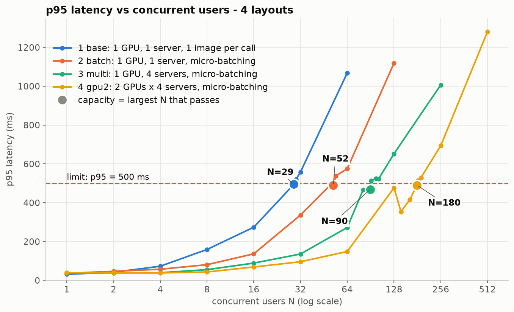
ดูเส้นของแบบที่ 4: จุด N = 128 สูงกว่าจุด N = 142 เพราะ NGINX พัก server ตัวหนึ่ง 10 วินาที ค่าประมาณของจังหวะที่ 2 (142.1) จึง ต่ำกว่าความจุจริง 38 คน
Round Robin แจกวนทีละตัวและไม่ดูงานค้าง ถ้ามีตัวช้า งานจะไปกองที่ตัวนั้น
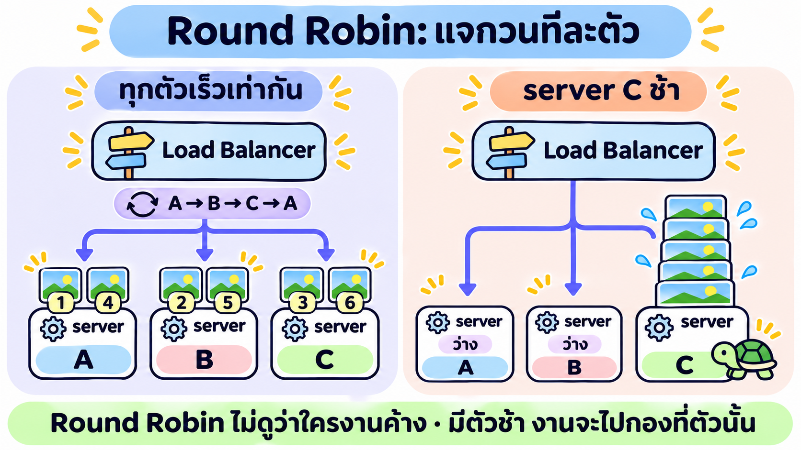
Least Connections ส่งคำขอใหม่ให้ server ที่งานค้างน้อยที่สุดในตอนนั้น
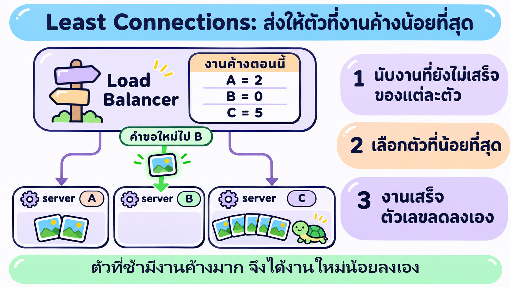
เมื่อมี GPU ช้า 1 ใบ Round Robin ให้ใบช้าครึ่งหนึ่ง ส่วน Least Connections ให้งานไหลไปใบเร็ว
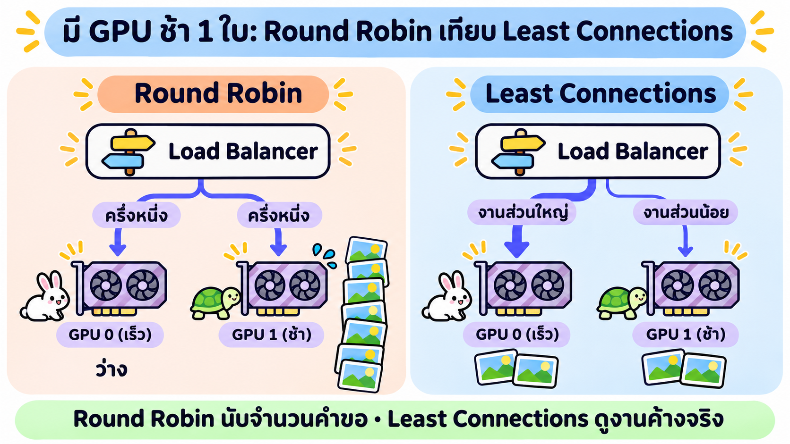
ใน LAB จำลอง GPU ช้าโดยให้ server ของ GPU ใบที่ 2 เรียกโมเดลช้าลง 3 เท่า
Power of Two Choices สุ่ม server มา 2 ตัว แล้วส่งคำขอให้ตัวที่งานค้างน้อยกว่า
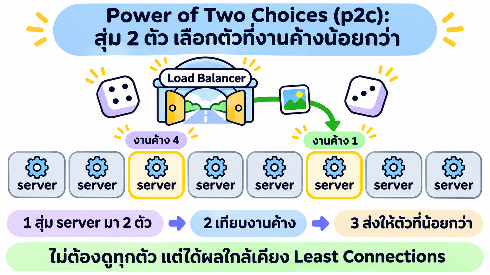
Least Connections ดู server ทุกตัว ส่วน Power of Two Choices สุ่มมา 2 ตัว
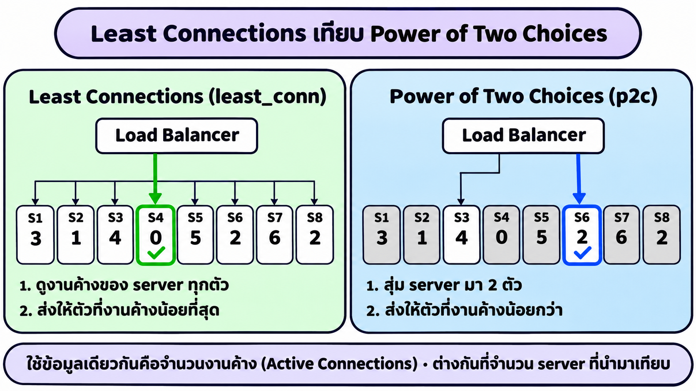
server 8 ตัวชุดเดียวกัน: Least Connections ได้ S4 ที่งานค้าง 0 ส่วน Power of Two Choices สุ่มได้ S3 กับ S6 จึงได้ S6 ที่งานค้าง 2
Least Connections กับ Power of Two Choices ต่างกันที่จำนวน server ที่นำมาเทียบตารางหลัก
| Least Connections | Power of Two Choices (p2c) | |
|---|---|---|
| ข้อมูลที่ใช้ตัดสิน | จำนวนงานค้าง | จำนวนงานค้าง |
| ดู server กี่ตัว | ทุกตัว | สุ่มมา 2 ตัว |
| server ที่ได้งาน | ตัวที่งานค้างน้อยที่สุดเสมอ | ตัวที่น้อยกว่าใน 2 ตัวที่สุ่มได้ (อาจไม่ใช่ตัวที่น้อยที่สุด) |
| งานของ Load Balancer ต่อ 1 คำขอ | เพิ่มตามจำนวน server | คงที่ ไม่ขึ้นกับจำนวน server |
| เมื่อมี Load Balancer หลายตัว | ทุกตัวเห็นตัวที่ว่างตัวเดียวกัน แล้วส่งงานไปกองพร้อมกันได้ | การสุ่มช่วยกระจาย ไม่ไปกองที่ตัวเดียว |
| เหมาะกับ | Load Balancer 1 ตัว · server ไม่กี่สิบตัว | server หลายร้อยตัว หรือ Load Balancer หลายตัว |
least_conn; (Least Connections) หรือ random two least_conn; (Power of Two Choices) ในบล็อก upstreamขั้นที่ 10: เทียบวิธีแจกงาน 3 วิธี ใน 2 ตอน (ทุกตอนวัดบนโหนดเดี่ยว 1 โหนด × 2 GPU)
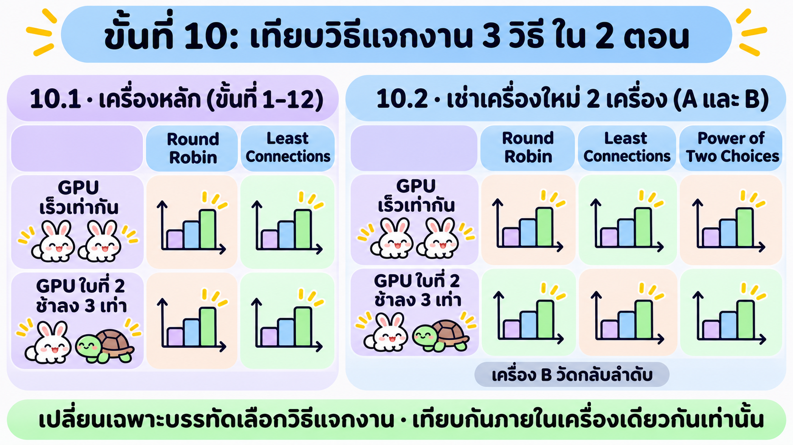
lc_equal rr_slow lc_slow (ตัวเทียบกรณีเท่ากันคือ gpu2)พรอมต์ · ขั้นที่ 10.1 · Round Robin เทียบ Least ConnectionsCopy & Paste
02_VastAi_Applicationพรอมต์ทั้งหมด 24 บรรทัด[ที่ทำงาน]
container `multi-account` · โฟลเดอร์ /workspace/vastapp_lab · สกิล vastai
เครื่อง: ป้าย vapp-lab6-nginx · กุญแจ SSH: /workspace/vastai_lab/Devtool_SSH/devtoolSSH
เก็บโค้ดและผลที่: lab6_microbatch_lb ของโฟลเดอร์ที่เปิด Claude Code อยู่ (ไม่ใช่ใน container)
[งาน]
เทียบวิธีแจกงานของ NGINX 2 วิธี บนระบบแบบที่ 4 (GPU 2 ใบ · ใบละ 4 server · Micro-batching)
Round Robin: แจกวนทีละตัว ไม่ดูว่าใครงานค้างมาก
Least Connections: ส่งให้ server ที่มีงานค้างน้อยที่สุดในตอนนั้น
[ขั้นตอน]
1. เพิ่มให้ code/cluster.sh เลือกวิธีแจกงานได้ 2 วิธีข้างบน และสั่งให้ server ของ GPU ใบที่เลือกเรียกโมเดลช้าลงกี่เท่าได้ (จำลอง GPU ที่ช้ากว่า)
2. ทั้งสองวิธีต้องใช้การตั้งค่าของ NGINX เหมือนกันทุกอย่าง ต่างกันแค่วิธีแจกงาน
3. กรณี GPU เร็วเท่ากัน: หาความจุของ Least Connections ตั้งชื่อผลว่า lc_equal (ตัวเทียบคือ gpu2 ที่เป็น Round Robin)
4. กรณี GPU ใบที่ 2 ช้าลง 3 เท่า: หาความจุ 2 รอบ · Round Robin ตั้งชื่อผลว่า rr_slow · Least Connections ตั้งชื่อผลว่า lc_slow
5. เสร็จแล้วเอาการหน่วงออก และเปิดระบบแบบที่ 4 กลับมาแบบ Round Robin
[เกณฑ์]
ผ่าน = p95 ไม่เกิน 500 ms และ error ต่ำกว่า 1%
ความจุ = จำนวนผู้ใช้พร้อมกัน (N) สูงสุดที่ผ่าน
[รายงาน]
สรุปเป็น 2 ตาราง (GPU เร็วเท่ากัน · GPU ใบที่ 2 ช้า) เทียบ 2 วิธี: ความจุ · Throughput สูงสุด · p95 ที่ความจุ · สัดส่วนคำขอที่ GPU แต่ละใบได้ · GPU แต่ละใบทำงานกี่ %
อธิบาย 3–4 บรรทัดว่าทำไมผลต่างกัน แล้วบอกว่าเครื่องยังเปิดอยู่ผลขั้นที่ 10.1: เมื่อ GPU ใบที่ 2 ช้าลง 3 เท่า Least Connections รับได้ 103 คน เทียบกับ 52 คนของ Round Robinresults/metrics.json
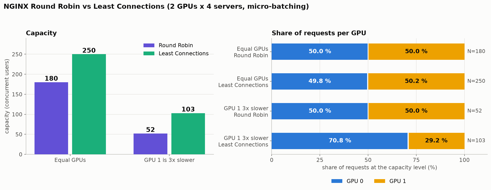
ซ้ายคือความจุของ 2 กรณี ขวาคือสัดส่วนคำขอที่ความจุ: ทุกแท่งแบ่งราว 50 ต่อ 50 ยกเว้น Least Connections กรณี GPU ช้า ส่วนต่าง 180 กับ 250 คนของกรณี GPU เร็วเท่ากันมาจากการวัดวิธีละ 1 รอบ จึงอ่านได้แค่ทิศทาง
ผลขั้นที่ 10.1 กรณี GPU ช้า: Least Connections ส่งคำขอ 70.8% ไป GPU ใบเร็วเองresults/rr_slow.json · lc_slow.json
ขั้นที่ 10.2: Round Robin ได้ 180, 128 และ 203 คนบน 3 เครื่อง จึงต้องเทียบในเครื่องเดียว
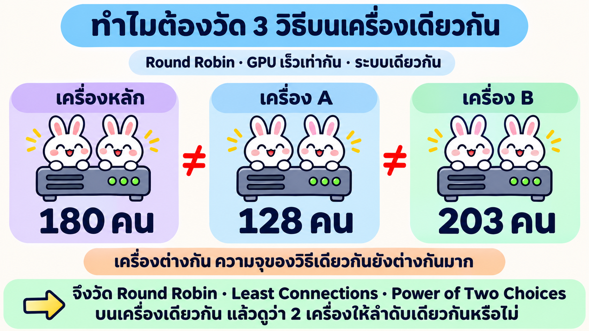
ขั้นที่ 10.2: ไฟล์ตั้งค่าของ 3 วิธีต่างกันเพียงบรรทัดเดียว
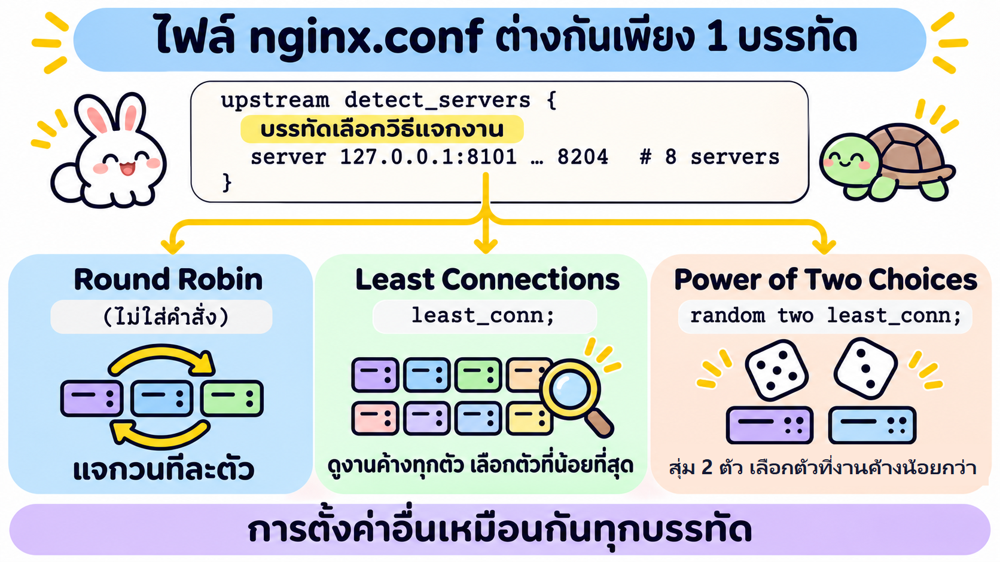
least_conn; · Power of Two Choices random two least_conn;พรอมต์ · ขั้นที่ 10.2 · 3 วิธีบนเครื่องเดียวกันCopy & Paste
vapp-lab6-p2c (1 โหนด × 2 GPU) และลบเองเมื่อจบ วางต่อจาก 10.1 ได้ทันทีส่วนที่ 1/2 · บรรทัด 1–19 จาก 36[ที่ทำงาน]
container `multi-account` · โฟลเดอร์ /workspace/vastapp_lab · สกิล vastai
กุญแจ SSH: /workspace/vastai_lab/Devtool_SSH/devtoolSSH
เก็บโค้ดและผลที่: lab6_microbatch_lb/same_machine ของโฟลเดอร์ที่เปิด Claude Code อยู่ (ไม่ใช่ใน container)
โค้ดตั้งต้น: คัดลอกโค้ดจาก lab6_microbatch_lb/code มาไว้ที่ lab6_microbatch_lb/same_machine/code
โมเดล: lab6_microbatch_lb/best.pt · รูปทดสอบ: lab6_microbatch_lb/samples (6 รูป)
[งาน]
เทียบวิธีแจกงานของ NGINX 3 วิธีบนเครื่องเดียวกัน ว่าวิธีใดรับผู้ใช้พร้อมกันได้มากกว่า
Round Robin: แจกวนทีละตัว
Least Connections: ส่งให้ server ที่มีงานค้างน้อยที่สุด
Power of Two Choices (p2c): สุ่ม server มา 2 ตัว แล้วส่งให้ตัวที่มีงานค้างน้อยกว่า
[ขั้นตอน]
1. เช่าเครื่อง RTX 3090 2 ใบในเครื่องเดียว ราคาไม่เกิน $0.60 ต่อชั่วโมง ป้าย vapp-lab6-p2c
(verified · reliability 0.95 ขึ้นไป · CPU ที่ใช้ได้จริง 24 cores ขึ้นไป · ไม่อยู่ในจีน · PyTorch 2.8 ที่มี CUDA 12.8 · disk 40 GB)
2. นำโค้ดตั้งต้น โมเดล และรูปทดสอบขึ้นเครื่อง ติดตั้งสิ่งที่ต้องใช้ และรัน NGINX เป็น container ด้วย udocker (image nginx:1.27)
3. เพิ่มให้ code/cluster.sh เลือกวิธีแจกงานแบบ p2c ได้ โดยไฟล์ตั้งค่าของ 3 วิธีต้องต่างกันเฉพาะบรรทัดเลือกวิธีแจกงาน
แล้วตรวจจากไฟล์ตั้งค่าที่ NGINX ใช้จริงว่าแต่ละวิธีถูกเปิดตามที่สั่งพรอมต์ · ขั้นที่ 10.2 · 3 วิธีบนเครื่องเดียวกันCopy & Paste
vapp-lab6-p2c (1 โหนด × 2 GPU) และลบเองเมื่อจบ วางต่อจาก 10.1 ได้ทันทีส่วนที่ 2/2 · บรรทัด 20–36 จาก 364. เปิดระบบ GPU 2 ใบ ใบละ 4 server โหมด Micro-batching (ไม่เกิน 32 รูป รอไม่เกิน 5 ms)
5. กรณี GPU เร็วเท่ากัน: หาความจุด้วยตัวยิงโหลดของทั้ง 3 วิธี วิธีละ 1 รอบ ตามลำดับ Round Robin → Least Connections → p2c
6. กรณี GPU ใบที่ 2 ช้าลง 3 เท่า: ทำแบบเดียวกับข้อ 5 ด้วยลำดับเดียวกัน
7. ตั้งชื่อผลเป็น <วิธี>_<กรณี> คือ rr_equal lc_equal p2c_equal rr_slow lc_slow p2c_slow และเก็บไฟล์ตั้งค่าที่ใช้จริงของทุกผลไว้ใน results
8. เขียน code/report3.py รวมผลลง results/metrics.json และวาดกราฟที่ results/images (ข้อความอังกฤษ):
ความจุของ 3 วิธีทั้ง 2 กรณี · สัดส่วนคำขอที่ GPU แต่ละใบได้ · p95 เทียบ N ของ 3 วิธีในแต่ละกรณี
9. นำผลและโค้ดทั้งหมดกลับมา ตรวจว่ามาครบ แล้วลบเครื่องป้าย vapp-lab6-p2c และตรวจว่าไม่เหลือ (ห้ามแตะเครื่องป้ายอื่น)
[เกณฑ์]
ผ่าน = p95 ไม่เกิน 500 ms และ error ต่ำกว่า 1%
ความจุ = จำนวนผู้ใช้พร้อมกัน (N) สูงสุดที่ผ่าน
[รายงาน]
สรุปเป็น 2 ตาราง (GPU เร็วเท่ากัน · GPU ใบที่ 2 ช้า): วิธี · ความจุ · ระดับแรกที่ไม่ผ่าน · Throughput สูงสุด · p95 ที่ความจุ · สัดส่วนคำขอ GPU 0 / GPU 1 · GPU ทำงานกี่ %
บรรทัดตั้งค่าของ NGINX ที่ต่างกันของ 3 วิธี · สิ่งผิดปกติระหว่างวัด (เช่น server ถูกพัก error หรือระดับที่ต้องวัดซ้ำ)
เครื่องที่เช่า: ที่ตั้ง · ราคาต่อชั่วโมง · CPU ที่ใช้ได้จริง · อายุเครื่อง · ยอดที่ถูกคิด
ไม่ต้อง commit · ห้ามแสดงค่า keyผลขั้นที่ 10.2 (GPU ช้า): Least Connections ได้ 96 และ 111 คน สูงกว่า Power of Two Choicessame_machine/summary.json
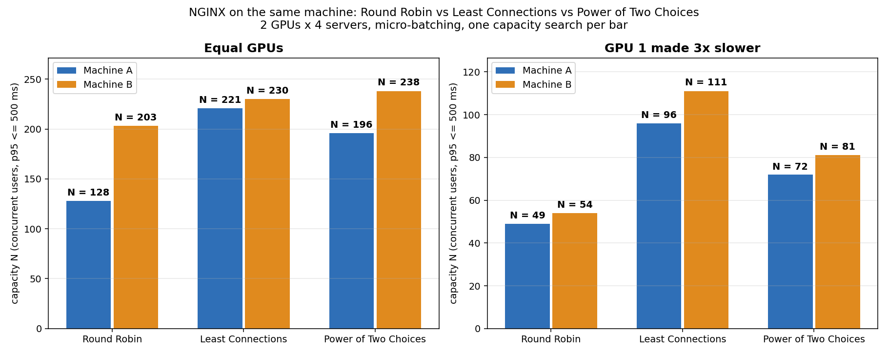
สองโหนดเดี่ยว (เครื่องละ 1 โหนด × 2 GPU) วัดกลับลำดับกัน ขวาคือกรณี GPU ช้า: Least Connections > Power of Two Choices (72 และ 81 คน) > Round Robin ทั้งสองเครื่อง
ผลขั้นที่ 10.2: ผู้ใช้ 64 คนเท่ากัน เมื่อ GPU ช้า 1 ใบ Round Robin เกินเกณฑ์ ส่วน Least Connections มี p95 ต่ำที่สุดsame_machine/summary.json
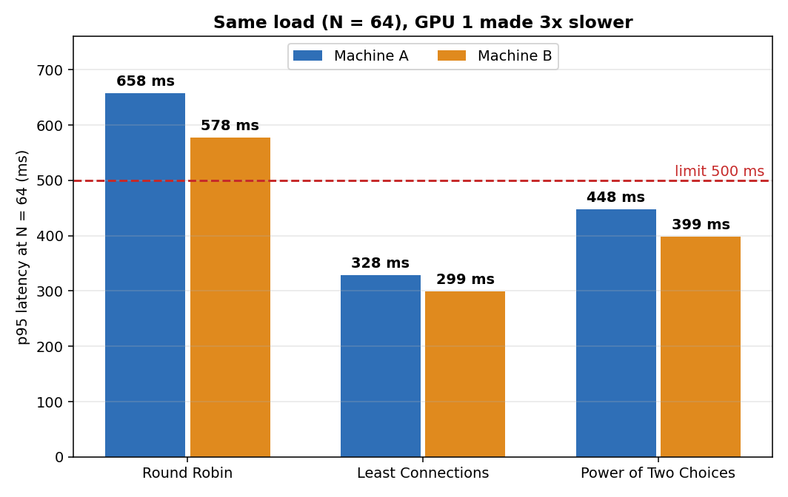
p95 ของ Least Connections คือ 328 และ 299 ms ของ Power of Two Choices คือ 448 และ 399 ms และของ Round Robin คือ 658 และ 578 ms ซึ่งเกินเส้น 500 ms
ผลขั้นที่ 10.2: เชื่อได้เมื่อ server เร็วไม่เท่ากัน และยังสรุปไม่ได้เมื่อ server เร็วเท่ากันตารางหลัก
| ข้อสรุป | หลักฐาน | เชื่อได้แค่ไหน |
|---|---|---|
| server เร็วไม่เท่ากัน: Least Connections ดีกว่า p2c | 96 กับ 72 · 111 กับ 81 | เชื่อได้ ลำดับเดียวกันทั้งสองเครื่อง ทั้งที่วัดกลับลำดับกัน และส่วนต่างกว้างกว่าความแกว่งใกล้เส้นเกณฑ์ |
| server เร็วไม่เท่ากัน: p2c ดีกว่า Round Robin | 72 กับ 49 · 81 กับ 54 | เชื่อได้ ด้วยเหตุผลเดียวกัน |
| server เร็วเท่ากัน: ทั้งสองวิธีดีกว่า Round Robin | 221 และ 196 กับ 128 · 230 และ 238 กับ 203 | ทิศทางตรงกันทั้งสองเครื่อง แต่ขนาดของส่วนต่างต่างกันมาก (1.13–1.73 เท่า) |
| server เร็วเท่ากัน: Least Connections กับ p2c วิธีใดดีกว่า | 221 กับ 196 · 230 กับ 238 | ยังสรุปไม่ได้ ลำดับสลับกันระหว่างสองเครื่อง |
สรุปขั้นที่ 10: ระบบขนาดนี้เลือก Least Connectionsตารางหลัก
| กรณี | วิธี | เครื่องหลัก (10.1) | เครื่อง A (10.2) | เครื่อง B (10.2) |
|---|---|---|---|---|
| GPU ใบที่ 2 ช้าลง 3 เท่า | Round Robin | 52 | 49 | 54 |
| GPU ใบที่ 2 ช้าลง 3 เท่า | Power of Two Choices | – | 72 | 81 |
| GPU ใบที่ 2 ช้าลง 3 เท่า | Least Connections | 103 | 96 | 111 |
| GPU เร็วเท่ากัน | Round Robin | 180 | 128 | 203 |
| GPU เร็วเท่ากัน | Power of Two Choices | – | 196 | 238 |
| GPU เร็วเท่ากัน | Least Connections | 250 | 221 | 230 |
เมื่อ GPU ล่ม Retry ส่งคำขอต่อให้ตัวอื่น และ Health Check เลิกส่งงานให้ตัวที่ล่ม
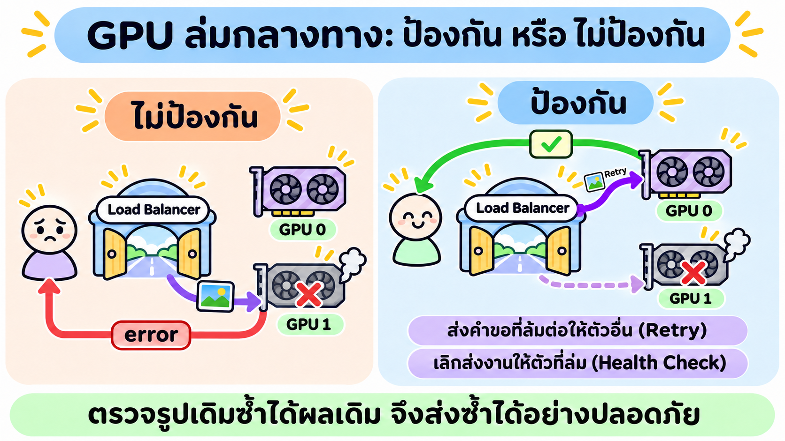
ขั้นที่ 11: ปิด server ของ GPU ใบที่ 2 ที่วินาทีที่ 20 ของการยิงโหลด 60 วินาที
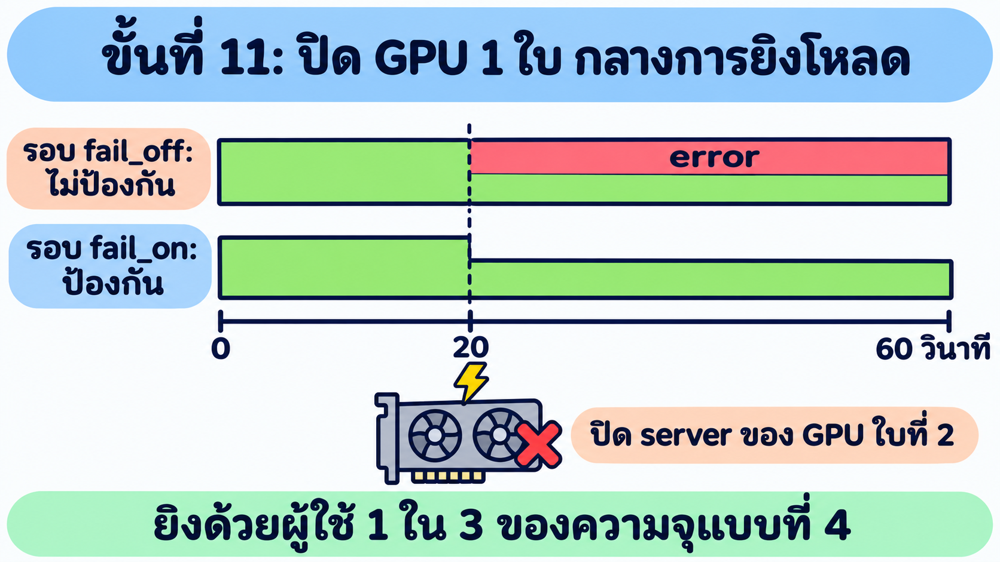
fail_off NGINX ไม่ป้องกัน และรอบ fail_on NGINX ป้องกันพรอมต์ · ขั้นที่ 11 · server ล่มกลางทางCopy & Paste
02_VastAi_Applicationพรอมต์ทั้งหมด 18 บรรทัด[ที่ทำงาน]
container `multi-account` · โฟลเดอร์ /workspace/vastapp_lab · สกิล vastai
เครื่อง: ป้าย vapp-lab6-nginx · กุญแจ SSH: /workspace/vastai_lab/Devtool_SSH/devtoolSSH
เก็บโค้ดและผลที่: lab6_microbatch_lb ของโฟลเดอร์ที่เปิด Claude Code อยู่ (ไม่ใช่ใน container)
[งาน]
ดูว่าเมื่อ GPU 1 ใบล่มกลางทาง ผู้ใช้เจอ error หรือไม่ บนระบบแบบที่ 4 (GPU 2 ใบ · ใบละ 4 server · Round Robin)
[ขั้นตอน]
1. เพิ่มให้ code/cluster.sh ปิด server ทั้งหมดของ GPU ใบที่เลือกแบบกะทันหันได้
และเลือกได้ว่า NGINX จะป้องกันหรือไม่ · ป้องกัน = ส่งคำขอที่ล้มต่อให้ server ตัวอื่น และเลิกส่งงานให้ตัวที่ล่ม
2. ยิงโหมดระดับเดียว 60 วินาที ด้วยผู้ใช้เท่ากับหนึ่งในสามของความจุแบบที่ 4 (ผล gpu2) · วินาทีที่ 20 ปิด server ของ GPU ใบที่ 2
3. ทำ 2 รอบ: ไม่ป้องกัน ตั้งชื่อผลว่า fail_off · ป้องกัน ตั้งชื่อผลว่า fail_on
4. เสร็จแล้วเปิดระบบแบบที่ 4 กลับมา
[รายงาน]
สรุปเป็นตารางเทียบ 2 รอบ: error จากคำขอทั้งหมด · Throughput ที่สำเร็จก่อนล่มและหลังล่ม · p95 หลังล่ม · หลังล่มยังผ่านเกณฑ์ p95 ไม่เกิน 500 ms ไหม
อธิบายการตั้งค่าของ NGINX ที่ใช้ป้องกัน 2–3 บรรทัด แล้วบอกว่าเครื่องยังเปิดอยู่ผลขั้นที่ 11: ไม่ป้องกัน error 34.2% ของคำขอทั้งหมด ส่วนรอบที่ป้องกัน error 0results/metrics.json
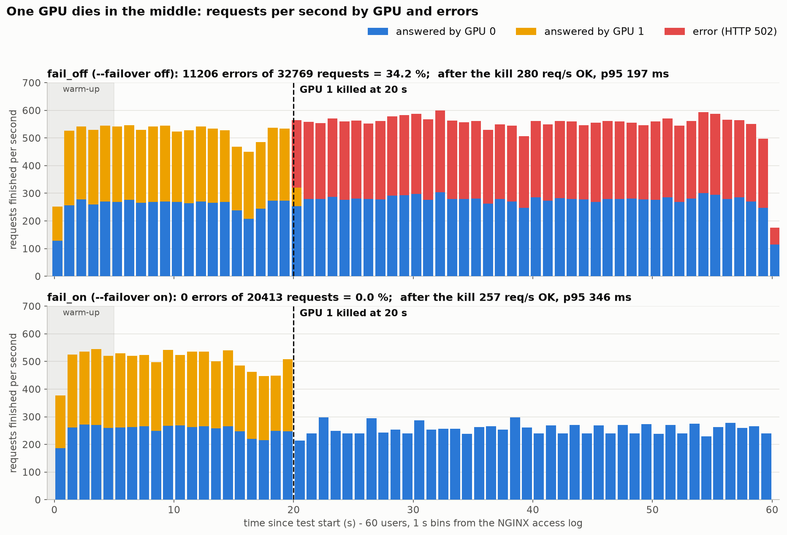
บนคือรอบ fail_off ล่างคือรอบ fail_on เส้นประคือวินาทีที่ 20 ที่ปิด GPU ใบที่ 2 และ แถบสีแดงคือ error
ผลขั้นที่ 11: การป้องกันของ NGINX คือ Retry และการพัก server ที่ล้ม 10 วินาที
upstream detect_servers {
server 127.0.0.1:8101 max_fails=1 fail_timeout=10s; # ล้ม 1 ครั้ง พักไม่รับงาน 10 วินาที
server 127.0.0.1:8201 max_fails=1 fail_timeout=10s;
# ... ครบ 8 ตัว
}
location /v1/ {
proxy_next_upstream error timeout non_idempotent; # คำขอที่ล้มส่งต่อให้ตัวถัดไป แม้เป็น POST ที่ส่งออกไปแล้ว
}non_idempotent เพราะ /v1/detect เป็น POST การส่งซ้ำใช้ได้เมื่อไม่ก่อผลซ้ำ เช่น การตรวจรูปขั้นที่ 12: รวมตัวเลขเป็นกราฟ นำผลกลับมา แล้วลบเครื่อง
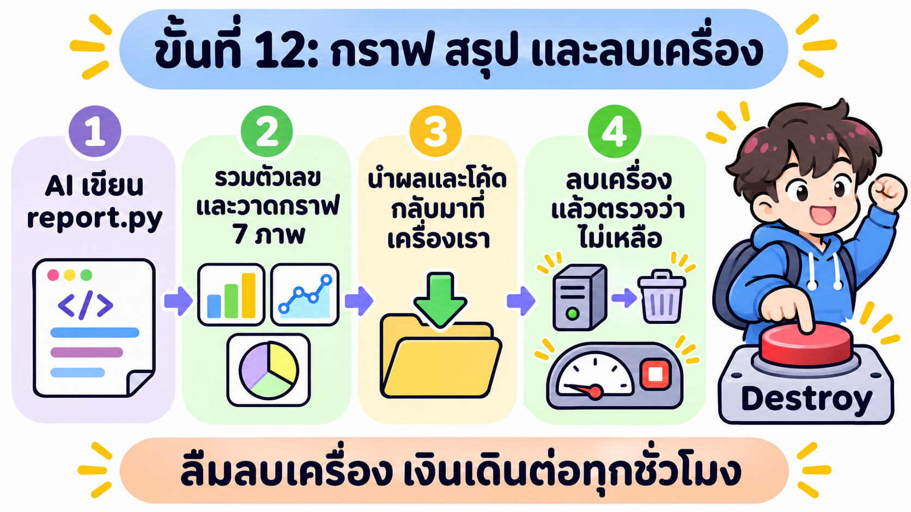
code/report.pyresults/metrics.json และวาดกราฟ 7 ภาพresults และโค้ดทุกไฟล์ที่ code แล้วตรวจว่ามาครบvapp-lab6-nginx แล้วตรวจว่าไม่เหลือพรอมต์ · ขั้นที่ 12 · กราฟ สรุป และลบเครื่อง (ห้ามข้าม)Copy & Paste
02_VastAi_Applicationพรอมต์ทั้งหมด 24 บรรทัด[ที่ทำงาน]
container `multi-account` · โฟลเดอร์ /workspace/vastapp_lab · สกิล vastai
เครื่อง: ป้าย vapp-lab6-nginx · กุญแจ SSH: /workspace/vastai_lab/Devtool_SSH/devtoolSSH
เก็บโค้ดและผลที่: lab6_microbatch_lb ของโฟลเดอร์ที่เปิด Claude Code อยู่ (ไม่ใช่ใน container)
[งาน]
สรุปผลเป็นกราฟ เก็บผลกลับ แล้วลบเครื่อง
[ขั้นตอน]
1. เขียน code/report.py รวมตัวเลขของทุกผล (base batch multi gpu2 lc_equal rr_slow lc_slow fail_off fail_on) ลง results/metrics.json
2. ให้สคริปต์วาดกราฟที่ results/images (ข้อความอังกฤษ)
- p95 เทียบ N ของ 4 แบบ พร้อมเส้นเกณฑ์ 500 ms และจุดความจุ
- Throughput เทียบ N ของ 4 แบบ
- แท่งความจุของ 4 แบบ
- จำนวนรูปเฉลี่ยที่เข้าโมเดลพร้อมกัน เทียบ N
- GPU ทำงานกี่ % และ CPU ของ server ที่ความจุของ 4 แบบ
- Round Robin เทียบ Least Connections: ความจุและสัดส่วนคำขอ ทั้ง 2 กรณี
- คำขอต่อวินาทีตอน GPU ล่ม แยกสีตาม GPU และ error ทั้ง 2 รอบ
3. นำผลทั้งหมดกลับมาที่ results และโค้ดทุกไฟล์ที่ code ตรวจว่ามาครบ และเปิดดูกราฟว่าอ่านออก
4. ลบเครื่องป้าย vapp-lab6-nginx แล้วตรวจว่าไม่เหลือ (ห้ามแตะเครื่องป้ายอื่น)
[รายงาน]
สรุปเป็นตาราง 4 แบบ: จำนวน GPU · แบบ · ความจุ · Throughput สูงสุด · p95 ที่ความจุ · เป็นกี่เท่าของแบบที่ 1
ค่าใช้จ่ายจริงของเครื่อง: อายุเครื่อง · ราคาต่อชั่วโมง · ยอดที่ถูกคิด · ห้ามแสดงค่า keyผลขั้นที่ 12: ความจุของ 4 แบบคือ 29, 52, 90 และ 180 คนresults/metrics.json
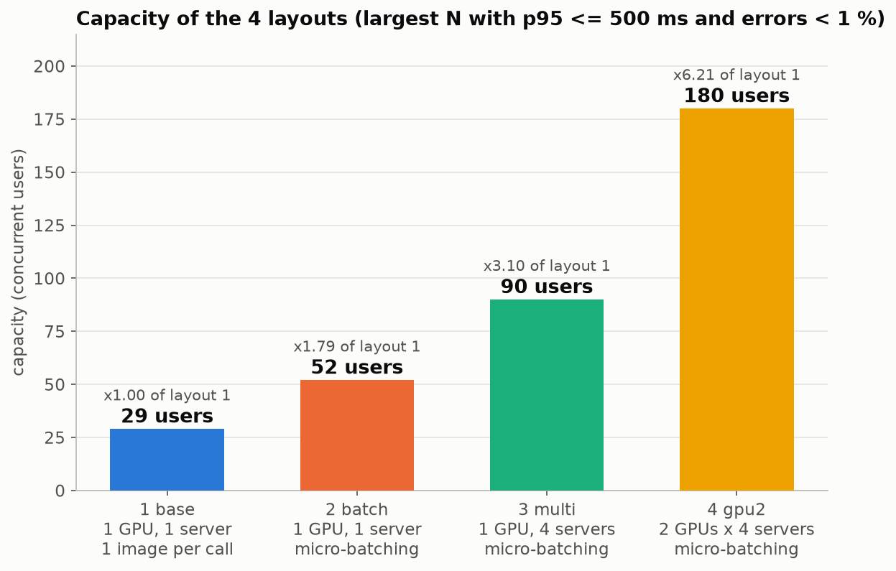
แบบที่ 2 และ 3 ใช้ GPU ใบเดิมโดยค่าเช่าเท่าเดิม แบบที่ 2 ได้ 1.79 เท่า และแบบที่ 3 ได้ 3.10 เท่าของแบบที่ 1 ก่อนเพิ่ม GPU ใบที่ 2
ผลขั้นที่ 12: Throughput ของทุกแบบเพิ่มแล้วแบนเมื่อระบบเต็มresults/metrics.json
Throughput สูงสุดของ 4 แบบคือ 62.6, 142.9, 278.7 และ 566.5 คำขอต่อวินาที ของแบบที่ 2 ถึง 4 เกิดที่ระดับที่ไม่ผ่านเกณฑ์
ผลขั้นที่ 12: จำนวนรูปต่อรอบปรับเองตามคิว จาก 3.3 รูปที่ N = 4 เป็น 26.0 รูปที่ N = 52results/batch.json
ดูเส้น 2 batch ของแบบที่ 2 ซึ่งเป็นเส้นสีส้มแดงที่อยู่บนสุด: จำนวนรูปเฉลี่ยต่อการเรียกโมเดล 1 ครั้งเพิ่มตาม N และ ชนเพดาน 32 รูปที่ N = 64
ผลขั้นที่ 12: GPU ทำงาน 22% ในแบบที่ 1, 31% ในแบบที่ 2 และ 82% ในแบบที่ 3results/metrics.json
ซ้ายคือ GPU ทำงานกี่ % ที่ความจุ ขวาคือ CPU ของ server รวม (100% = 1 core) ตัวถ่วงของแบบที่ 3 น่าจะเป็น GPU ซึ่งรอบนี้ยังไม่ได้วัดแยกยืนยัน
สรุป 4 แบบ: แต่ละแบบแก้ตัวถ่วงคนละตัว และมีราคาที่ต้องจ่ายต่างกันตารางหลัก
| แบบ | เปลี่ยนอะไร | แก้ตัวถ่วงไหน | จ่ายเพิ่ม |
|---|---|---|---|
| 1 ทำทีละรูป | – | – | – |
| 2 Micro-batching | รวมรูปที่รออยู่เข้าโมเดลครั้งเดียว | การเรียกโมเดลทีละรูป | ผู้ใช้คนเดียวช้าลงเล็กน้อย |
| 3 + server 4 ตัว | เปิด server หลายตัวบน GPU ใบเดิม | CPU ของ server ตัวเดียว | VRAM และ CPU |
| 4 GPU 2 ใบ + Load Balancer | เพิ่ม GPU แล้วแจกงาน | GPU | ค่าเช่า GPU ใบที่ 2 |
สิ่งที่ได้จาก LAB 6
ลำดับที่คุ้ม บทเรียนจากการวัด และข้อที่ต้องอ่านคู่กับตัวเลข
สรุปผล LAB 6: เพิ่ม Capacity ได้ทีละขั้น โดย 2 ขั้นแรกไม่เสียค่าเช่าเพิ่ม
ขั้นที่ 1–2 คือกี่เท่าของแบบที่ 1 ขั้นที่ 3 คือกี่เท่าของแบบที่ 3 และขั้นที่ 4 คือ Least Connections เทียบ Round Robin เมื่อ GPU ใบที่ 2 ช้าลง 3 เท่า บน 3 เครื่อง
ถ้าต้องเลือกใช้จริง ให้ทำตามลำดับ 5 ขั้น เพราะขั้นบนถูกกว่าขั้นล่างตารางหลัก
| ลำดับ | เลือก | เหตุผลจากผลวัด |
|---|---|---|
| 1 | เปิด Micro-batching | รับได้ 1.79 เท่า ไม่เสียเงินเพิ่ม · ผู้ใช้คนเดียวช้าลง 5.1 ms |
| 2 | เปิด server หลายตัวต่อ GPU จน GPU ทำงานเกิน 80% | รวมสองข้อแรกได้ 3.10 เท่าบน GPU ใบเดิม |
| 3 | เพิ่ม GPU เมื่อใบเดิมเต็มแล้วเท่านั้น | ได้ประมาณ 2 เท่า แต่จ่ายค่าเช่า 2 เท่า |
| 4 | ใช้ Least Connections เป็นค่าตั้งต้น | ไม่แย่กว่า Round Robin ในทุกรอบที่วัด และดีกว่าราว 2 เท่าเมื่อ server เร็วไม่เท่ากัน |
| 5 | เปิด Retry + Health Check เสมอ | error 34.2% เหลือ 0 · ใช้ได้กับงานที่ส่งซ้ำแล้วได้ผลเดิม |
เลือกวิธีแจกงาน: ระบบขนาดนี้เลือก Least Connections ระบบใหญ่ใช้ Power of Two Choicesตารางหลัก
| สถานการณ์ | เลือก | เหตุผล |
|---|---|---|
| Load Balancer 1 ตัว · server ไม่กี่สิบตัว (ระบบของ LAB นี้) | Least Connections | เห็นทุกตัว จึงเลือกได้ดีที่สุด · วัดได้ 1.33–1.37 เท่าของ p2c เมื่อ server เร็วไม่เท่ากัน |
| server หลายร้อยตัว หรือมี Load Balancer หลายตัวแจกงานพร้อมกัน | p2c | งานต่อคำขอคงที่ และไม่ส่งงานไปกองที่ server ตัวเดียว (เหตุผลตามทฤษฎี LAB นี้ไม่ได้วัด) |
| server เร็วเท่ากันทุกตัว และงานแต่ละคำขอใช้เวลาใกล้กัน | Round Robin ก็พอ | ไม่มีตัวช้าให้หลบ |
บทเรียน 4 ข้อจากการวัด: พิสูจน์เครื่องมือ บอกเกณฑ์ ดู error และวัดซ้ำ
รอบที่ไม่ป้องกัน GPU ล่มมี p95 ดูดี ทั้งที่ error หลังล่มราวครึ่งหนึ่ง จึงต้อง ดู error คู่กับ p95 เสมอ